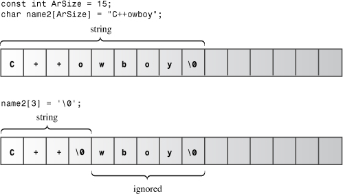
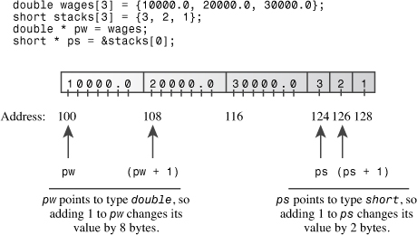
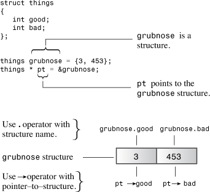

In this chapter you’ll learn about the following:
• Creating and using arrays
• Creating and using C-style strings
• Creating and using string-class strings
• Using the getline() and get() methods for reading strings
• Mixing string and numeric input
• Creating and using structures
• Creating and using unions
• Creating and using enumerations
• Creating and using pointers
• Managing dynamic memory with new and delete
• Creating dynamic arrays
• Creating dynamic structures
• Automatic, static, and dynamic storage
• The vector and array classes (an introduction)
Say you’ve developed a computer game called User-Hostile in which players match wits with a cryptic and abusive computer interface. Now you must write a program that keeps track of your monthly game sales for a five-year period. Or you want to inventory your accumulation of hacker-hero trading cards. You soon conclude that you need something more than C++’s simple basic types to meet these data requirements, and C++ offers something more—compound types. These are types built from the basic integer and floating-point types. The most far-reaching compound type is the class, that bastion of OOP toward which we are progressing. But C++ also supports several more modest compound types taken from C. The array, for example, can hold several values of the same type. A particular kind of array can hold a string, which is a series of characters. Structures can hold several values of differing types. Then there are pointers, which are variables that tell a computer where data is placed. You’ll examine all these compound forms (except classes) in this chapter, take a first look at new and delete and how you can use them to manage data, and take an introductory look at the C++ string class, which gives you an alternative way to work with strings.
An array is a data form that can hold several values, all of one type. For example, an array can hold 60 type int values that represent five years of game sales data, 12 short values that represent the number of days in each month, or 365 float values that indicate your food expenses for each day of the year. Each value is stored in a separate array element, and the computer stores all the elements of an array consecutively in memory.
To create an array, you use a declaration statement. An array declaration should indicate three things:
• The type of value to be stored in each element
• The name of the array
• The number of elements in the array
You accomplish this in C++ by modifying the declaration for a simple variable and adding brackets that contain the number of elements. For example, the following declaration creates an array named months that has 12 elements, each of which can hold a type short value:
short months[12]; // creates array of 12 short
Each element, in essence, is a variable that you can treat as a simple variable.
This is the general form for declaring an array:
typeName arrayName[arraySize];
The expression arraySize, which is the number of elements, must be an integer constant, such as 10 or a const value, or a constant expression, such as 8 * sizeof (int), for which all values are known at the time compilation takes place. In particular, arraySize cannot be a variable whose value is set while the program is running. However, later in this chapter you’ll learn how to use the new operator to get around that restriction.
Much of the usefulness of the array comes from the fact that you can access array elements individually. The way to do this is to use a subscript, or an index, to number the elements. C++ array numbering starts with zero. (This is nonnegotiable; you have to start at zero. Pascal and BASIC users will have to adjust.) C++ uses a bracket notation with the index to specify an array element. For example, months[0] is the first element of the months array, and months[11] is the last element. Note that the index of the last element is one less than the size of the array (see Figure 4.1). Thus, an array declaration enables you to create a lot of variables with a single declaration, and you can then use an index to identify and access individual elements.
Figure 4.1. Creating an array.
The yam analysis program in Listing 4.1 demonstrates a few properties of arrays, including declaring an array, assigning values to array elements, and initializing an array.
// arrayone.cpp -- small arrays of integers
#include <iostream>
int main()
{
using namespace std;
int yams[3]; // creates array with three elements
yams[0] = 7; // assign value to first element
yams[1] = 8;
yams[2] = 6;
int yamcosts[3] = {20, 30, 5}; // create, initialize array
// NOTE: If your C++ compiler or translator can't initialize
// this array, use static int yamcosts[3] instead of
// int yamcosts[3]
cout << "Total yams = ";
cout << yams[0] + yams[1] + yams[2] << endl;
cout << "The package with " << yams[1] << " yams costs ";
cout << yamcosts[1] << " cents per yam.\n";
int total = yams[0] * yamcosts[0] + yams[1] * yamcosts[1];
total = total + yams[2] * yamcosts[2];
cout << "The total yam expense is " << total << " cents.\n";
cout << "\nSize of yams array = " << sizeof yams;
cout << " bytes.\n";
cout << "Size of one element = " << sizeof yams[0];
cout << " bytes.\n";
return 0;
}
Here is the output from the program in Listing 4.1:
Total yams = 21
The package with 8 yams costs 30 cents per yam.
The total yam expense is 410 cents.
Size of yams array = 12 bytes.
Size of one element = 4 bytes.
First, the program in Listing 4.1 creates a three-element array called yams. Because yams has three elements, the elements are numbered from 0 through 2, and arrayone.cpp uses index values of 0 through 2 to assign values to the three individual elements. Each individual yam element is an int with all the rights and privileges of an int type, so arrayone.cpp can, and does, assign values to elements, add elements, multiply elements, and display elements.
The program uses the long way to assign values to the yam elements. C++ also lets you initialize array elements within the declaration statement. Listing 4.1 uses this shortcut to assign values to the yamcosts array:
int yamcosts[3] = {20, 30, 5};
It simply provides a comma-separated list of values (the initialization list) enclosed in braces. The spaces in the list are optional. If you don’t initialize an array that’s defined inside a function, the element values remain undefined. That means the element takes on whatever value previously resided at that location in memory.
Next, the program uses the array values in a few calculations. This part of the program looks cluttered with all the subscripts and brackets. The for loop, coming up in Chapter 5, “Loops and Relational Expressions,” provides a powerful way to deal with arrays and eliminates the need to write each index explicitly. For the time being, we’ll stick to small arrays.
As you should recall, the sizeof operator returns the size, in bytes, of a type or data object. Note that if you use the sizeof operator with an array name, you get the number of bytes in the whole array. But if you use sizeof with an array element, you get the size, in bytes, of the element. This illustrates that yams is an array, but yams[1] is just an int.
C++ has several rules about initializing arrays. They restrict when you can do it, and they determine what happens if the number of array elements doesn’t match the number of values in the initializer. Let’s examine these rules.
You can use the initialization form only when defining the array. You cannot use it later, and you cannot assign one array wholesale to another:
int cards[4] = {3, 6, 8, 10}; // okay
int hand[4]; // okay
hand[4] = {5, 6, 7, 9}; // not allowed
hand = cards; // not allowed
However, you can use subscripts and assign values to the elements of an array individually.
When initializing an array, you can provide fewer values than array elements. For example, the following statement initializes only the first two elements of hotelTips:
float hotelTips[5] = {5.0, 2.5};
If you partially initialize an array, the compiler sets the remaining elements to zero. Thus, it’s easy to initialize all the elements of an array to zero—just explicitly initialize the first element to zero and then let the compiler initialize the remaining elements to zero:
long totals[500] = {0};
Note that if you initialize to {1} instead of to {0}, just the first element is set to 1; the rest still get set to 0.
If you leave the square brackets ([]) empty when you initialize an array, the C++ compiler counts the elements for you. Suppose, for example, that you make this declaration:
short things[] = {1, 5, 3, 8};
The compiler makes things an array of four elements.
As Chapter 3, “Dealing with Data,” mentioned, C++11 makes the brace form of initialization (list-initialization) a universal form for all types. Arrays already use list-initialization, but the C++11 version adds a few more features.
First, you can drop the = sign when initializing an array:
double earnings[4] {1.2e4, 1.6e4, 1.1e4, 1.7e4}; // okay with C++11
Second, you can use empty braces to set all the elements to 0:
unsigned int counts[10] = {}; // all elements set to 0
float balances[100] {}; // all elements set to 0
Third, as discussed in Chapter 3, list-initialization protects against narrowing:
long plifs[] = {25, 92, 3.0}; // not allowed
char slifs[4] {'h', 'i', 1122011, '\0'}; // not allowed
char tlifs[4] {'h', 'i', 112, '\0'}; // allowed
The first initialization fails because converting from a floating-point type to an integer type is narrowing, even if the floating-point value has only zeros after the decimal point. The second initialization fails because 1122011 is outside the range of a char, assuming we have an 8-bit char. The third succeeds because, even though 112 is an int value, it still is in the range of a char.
The C++ Standard Template Library (STL) provides an alternative to arrays called the vector template class, and C++11 adds an array template class. These alternatives are more sophisticated and flexible than the built-in array composite type. This chapter will discuss them briefly later, and Chapter 16, “The string Class and the Standard Template Library,” discusses them more fully.
A string is a series of characters stored in consecutive bytes of memory. C++ has two ways of dealing with strings. The first, taken from C and often called a C-style string, is the first one this chapter examines. Later, this chapter discusses an alternative method based on a string class library.
The idea of a series of characters stored in consecutive bytes implies that you can store a string in an array of char, with each character kept in its own array element. Strings provide a convenient way to store text information, such as messages to the user (“Please tell me your secret Swiss bank account number”) or responses from the user (“You must be joking”). C-style strings have a special feature: The last character of every string is the null character. This character, written \0, is the character with ASCII code 0, and it serves to mark the string’s end. For example, consider the following two declarations:
char dog[8] = { 'b', 'e', 'a', 'u', 'x', ' ', 'I', 'I'}; // not a string!
char cat[8] = {'f', 'a', 't', 'e', 's', 's', 'a', '\0'}; // a string!
Both of these arrays are arrays of char, but only the second is a string. The null character plays a fundamental role in C-style strings. For example, C++ has many functions that handle strings, including those used by cout. They all work by processing a string character-by-character until they reach the null character. If you ask cout to display a nice string like cat in the preceding example, it displays the first seven characters, detects the null character, and stops. But if you are ungracious enough to tell cout to display the dog array from the preceding example, which is not a string, cout prints the eight letters in the array and then keeps marching through memory byte-by-byte, interpreting each byte as a character to print, until it reaches a null character. Because null characters, which really are bytes set to zero, tend to be common in memory, the damage is usually contained quickly; nonetheless, you should not treat nonstring character arrays as strings.
The cat array example makes initializing an array to a string look tedious—all those single quotes and then having to remember the null character. Don’t worry. There is a better way to initialize a character array to a string. Just use a quoted string, called a string constant or string literal, as in the following:
char bird[11] = "Mr. Cheeps"; // the \0 is understood
char fish[] = "Bubbles"; // let the compiler count
Quoted strings always include the terminating null character implicitly, so you don’t have to spell it out (see Figure 4.2). Also the various C++ input facilities for reading a string from keyboard input into a char array automatically add the terminating null character for you. (If, when you run the program in Listing 4.1, you discover that you have to use the keyword static to initialize an array, you have to use it with these char arrays, too.)
Figure 4.2. Initializing an array to a string.

Of course, you should make sure the array is large enough to hold all the characters of the string, including the null character. Initializing a character array with a string constant is one case where it may be safer to let the compiler count the number of elements for you. There is no harm, other than wasted space, in making an array larger than the string. That’s because functions that work with strings are guided by the location of the null character, not by the size of the array. C++ imposes no limits on the length of a string.
When determining the minimum array size necessary to hold a string, remember to include the terminating null character in your count.
Note that a string constant (with double quotes) is not interchangeable with a character constant (with single quotes). A character constant, such as 'S', is a shorthand notation for the code for a character. On an ASCII system, 'S' is just another way of writing 83. Thus, the following statement assigns the value 83 to shirt_size:
char shirt_size = 'S'; // this is fine
But "S" is not a character constant; it represents the string consisting of two characters, the S and the \0 characters. Even worse, "S" actually represents the memory address at which the string is stored. So a statement like the following attempts to assign a memory address to shirt_size:
char shirt_size = "S"; // illegal type mismatch
Because an address is a separate type in C++, a C++ compiler won’t allow this sort of nonsense. (We’ll return to this point later in this chapter after we’ve discussed pointers.)
Sometimes a string may be too long to conveniently fit on one line of code. C++ enables you to concatenate string literals—that is, to combine two quoted strings into one. Indeed, any two string constants separated only by whitespace (spaces, tabs, and newlines) are automatically joined into one. Thus, all the following output statements are equivalent to each other:
cout << "I'd give my right arm to be" " a great violinist.\n";
cout << "I'd give my right arm to be a great violinist.\n";
cout << "I'd give my right ar"
"m to be a great violinist.\n";
Note that the join doesn’t add any spaces to the joined strings. The first character of the second string immediately follows the last character, not counting \0, of the first string. The \0 character from the first string is replaced by the first character of the second string.
The two most common ways of getting a string into an array are to initialize an array to a string constant and to read keyboard or file input into an array. Listing 4.2 demonstrates these approaches by initializing one array to a quoted string and using cin to place an input string into a second array. The program also uses the standard C library function strlen() to get the length of a string. The standard cstring header file (or string.h for older implementations) provides declarations for this and many other string-related functions.
// strings.cpp -- storing strings in an array
#include <iostream>
#include <cstring> // for the strlen() function
int main()
{
using namespace std;
const int Size = 15;
char name1[Size]; // empty array
char name2[Size] = "C++owboy"; // initialized array
// NOTE: some implementations may require the static keyword
// to initialize the array name2
cout << "Howdy! I'm " << name2;
cout << "! What's your name?\n";
cin >> name1;
cout << "Well, " << name1 << ", your name has ";
cout << strlen(name1) << " letters and is stored\n";
cout << "in an array of " << sizeof(name1) << " bytes.\n";
cout << "Your initial is " << name1[0] << ".\n";
name2[3] = '\0'; // set to null character
cout << "Here are the first 3 characters of my name: ";
cout << name2 << endl;
return 0;
}
Here is a sample run of the program in Listing 4.2:
Howdy! I'm C++owboy! What's your name?
Basicman
Well, Basicman, your name has 8 letters and is stored
in an array of 15 bytes.
Your initial is B.
Here are the first 3 characters of my name: C++
What can you learn from Listing 4.2? First, note that the sizeof operator gives the size of the entire array, 15 bytes, but the strlen() function returns the size of the string stored in the array and not the size of the array itself. Also strlen() counts just the visible characters and not the null character. Thus, it returns a value of 8, not 9, for the length of Basicman. If cosmic is a string, the minimum array size for holding that string is strlen(cosmic) + 1.
Because name1 and name2 are arrays, you can use an index to access individual characters in the array. For example, the program uses name1[0] to find the first character in that array. Also the program sets name2[3] to the null character. That makes the string end after three characters, even though more characters remain in the array (see Figure 4.3).
Figure 4.3. Shortening a string with \0.

Note that the program in Listing 4.2 uses a symbolic constant for the array size. Often the size of an array appears in several statements in a program. Using a symbolic constant to represent the size of an array simplifies revising the program to use a different array size; you just have to change the value once, where the symbolic constant is defined.
The strings.cpp program has a blemish that is concealed through the often useful technique of carefully selected sample input. Listing 4.3 removes the veils and shows that string input can be tricky.
// instr1.cpp -- reading more than one string
#include <iostream>
int main()
{
using namespace std;
const int ArSize = 20;
char name[ArSize];
char dessert[ArSize];
cout << "Enter your name:\n";
cin >> name;
cout << "Enter your favorite dessert:\n";
cin >> dessert;
cout << "I have some delicious " << dessert;
cout << " for you, " << name << ".\n";
return 0;
}
The intent of the program in Listing 4.3 is simple: Read a user’s name and favorite dessert from the keyboard and then display the information. Here is a sample run:
Enter your name:
Alistair Dreeb
Enter your favorite dessert:
I have some delicious Dreeb for you, Alistair.
We didn’t even get a chance to respond to the dessert prompt! The program showed it and then immediately moved on to display the final line.
The problem lies with how cin determines when you’ve finished entering a string. You can’t enter the null character from the keyboard, so cin needs some other means for locating the end of a string. The cin technique is to use whitespace—spaces, tabs, and newlines—to delineate a string. This means cin reads just one word when it gets input for a character array. After it reads this word, cin automatically adds the terminating null character when it places the string into the array.
The practical result in this example is that cin reads Alistair as the entire first string and puts it into the name array. This leaves poor Dreeb still sitting in the input queue. When cin searches the input queue for the response to the favorite dessert question, it finds Dreeb still there. Then cin gobbles up Dreeb and puts it into the dessert array (see Figure 4.4).
Figure 4.4. The cin view of string input.

Another problem, which didn’t surface in the sample run, is that the input string might turn out to be longer than the destination array. Using cin as this example did offers no protection against placing a 30-character string in a 20-character array.
Many programs depend on string input, so it’s worthwhile to explore this topic further. We’ll have to draw on some of the more advanced features of cin, which are described in Chapter 17, “Input, Output, and Files.”
Reading string input a word at a time is often not the most desirable choice. For instance, suppose a program asks the user to enter a city, and the user responds with New York or Sao Paulo. You would want the program to read and store the full names, not just New and Sao. To be able to enter whole phrases instead of single words as a string, you need a different approach to string input. Specifically, you need a line-oriented method instead of a word-oriented method. You are in luck, for the istream class, of which cin is an example, has some line-oriented class member functions: getline() and get(). Both read an entire input line—that is, up until a newline character. However, getline() then discards the newline character, whereas get() leaves it in the input queue. Let’s look at the details, beginning with getline().
getline()The getline() function reads a whole line, using the newline character transmitted by the Enter key to mark the end of input. You invoke this method by using cin.getline() as a function call. The function takes two arguments. The first argument is the name of the target (that is, the array destined to hold the line of input), and the second argument is a limit on the number of characters to be read. If this limit is, say, 20, the function reads no more than 19 characters, leaving room to automatically add the null character at the end. The getline() member function stops reading input when it reaches this numeric limit or when it reads a newline character, whichever comes first.
For example, suppose you want to use getline() to read a name into the 20-element name array. You would use this call:
cin.getline(name,20);
This reads the entire line into the name array, provided that the line consists of 19 or fewer characters. (The getline() member function also has an optional third argument, which Chapter 17 discusses.)
Listing 4.4 modifies Listing 4.3 to use cin.getline() instead of a simple cin. Otherwise, the program is unchanged.
// instr2.cpp -- reading more than one word with getline
#include <iostream>
int main()
{
using namespace std;
const int ArSize = 20;
char name[ArSize];
char dessert[ArSize];
cout << "Enter your name:\n";
cin.getline(name, ArSize); // reads through newline
cout << "Enter your favorite dessert:\n";
cin.getline(dessert, ArSize);
cout << "I have some delicious " << dessert;
cout << " for you, " << name << ".\n";
return 0;
}
Here is some sample output for Listing 4.4:
Enter your name:
Dirk Hammernose
Enter your favorite dessert:
Radish Torte
I have some delicious Radish Torte for you, Dirk Hammernose.
The program now reads complete names and delivers the user his just desserts! The getline() function conveniently gets a line at a time. It reads input through the newline character marking the end of the line, but it doesn’t save the newline character. Instead, it replaces it with a null character when storing the string (see Figure 4.5).
Figure 4.5. getline() reads and replaces the newline character.

get()Let’s try another approach. The istream class has another member function, get(), which comes in several variations. One variant works much like getline(). It takes the same arguments, interprets them the same way, and reads to the end of a line. But rather than read and discard the newline character, get() leaves that character in the input queue. Suppose you use two calls to get() in a row:
cin.get(name, ArSize);
cin.get(dessert, Arsize); // a problem
Because the first call leaves the newline character in the input queue, that newline character is the first character the second call sees. Thus, get() concludes that it’s reached the end of line without having found anything to read. Without help, get() just can’t get past that newline character.
Fortunately, there is help in the form of a variation of get(). The call cin.get() (with no arguments) reads the single next character, even if it is a newline, so you can use it to dispose of the newline character and prepare for the next line of input. That is, this sequence works:
cin.get(name, ArSize); // read first line
cin.get(); // read newline
cin.get(dessert, Arsize); // read second line
Another way to use get() is to concatenate, or join, the two class member functions, as follows:
cin.get(name, ArSize).get(); // concatenate member functions
What makes this possible is that cin.get(name, ArSize) returns the cin object, which is then used as the object that invokes the get() function. Similarly, the following statement reads two consecutive input lines into the arrays name1 and name2; it’s equivalent to making two separate calls to cin.getline():
cin.getline(name1, ArSize).getline(name2, ArSize);
Listing 4.5 uses concatenation. In Chapter 11, “Working with Classes,” you’ll learn how to incorporate this feature into your class definitions.
// instr3.cpp -- reading more than one word with get() & get()
#include <iostream>
int main()
{
using namespace std;
const int ArSize = 20;
char name[ArSize];
char dessert[ArSize];
cout << "Enter your name:\n";
cin.get(name, ArSize).get(); // read string, newline
cout << "Enter your favorite dessert:\n";
cin.get(dessert, ArSize).get();
cout << "I have some delicious " << dessert;
cout << " for you, " << name << ".\n";
return 0;
}
Here is a sample run of the program in Listing 4.5:
Enter your name:
Mai Parfait
Enter your favorite dessert:
Chocolate Mousse
I have some delicious Chocolate Mousse for you, Mai Parfait.
One thing to note is how C++ allows multiple versions of functions, provided that they have different argument lists. If you use, say, cin.get(name, ArSize), the compiler notices you’re using the form that puts a string into an array and sets up the appropriate member function. If, instead, you use cin.get(), the compiler realizes you want the form that reads one character. Chapter 8, “Adventures in Functions,” explores this feature, which is called function overloading.
Why use get() instead of getline() at all? First, older implementations may not have getline(). Second, get() lets you be a bit more careful. Suppose, for example, you used get() to read a line into an array. How can you tell if it read the whole line rather than stopped because the array was filled? Look at the next input character. If it is a newline character, then the whole line was read. If it is not a newline character, then there is still more input on that line. Chapter 17 investigates this technique. In short, getline() is a little simpler to use, but get() makes error checking simpler. You can use either one to read a line of input; just keep the slightly different behaviors in mind.
What happens after getline() or get() reads an empty line? The original practice was that the next input statement picked up where the last getline() or get() left off. However, the current practice is that after get() (but not getline()) reads an empty line, it sets something called the failbit. The implications of this act are that further input is blocked, but you can restore input with the following command:
cin.clear();
Another potential problem is that the input string could be longer than the allocated space. If the input line is longer than the number of characters specified, both getline() and get() leave the remaining characters in the input queue. However, getline() additionally sets the failbit and turns off further input.
Chapters 5, 6, and 17 investigate these properties and how to program around them.
Mixing numeric input with line-oriented string input can cause problems. Consider the simple program in Listing 4.6.
// numstr.cpp -- following number input with line input
#include <iostream>
int main()
{
using namespace std;
cout << "What year was your house built?\n";
int year;
cin >> year;
cout << "What is its street address?\n";
char address[80];
cin.getline(address, 80);
cout << "Year built: " << year << endl;
cout << "Address: " << address << endl;
cout << "Done!\n";
return 0;
}
Running the program in Listing 4.6 would look something like this:
What year was your house built?
1966
What is its street address?
Year built: 1966
Address
Done!
You never get the opportunity to enter the address. The problem is that when cin reads the year, it leaves the newline generated by the Enter key in the input queue. Then cin.getline() reads the newline as an empty line and assigns a null string to the address array. The fix is to read and discard the newline before reading the address. This can be done several ways, including by using get() with a char argument or with no argument, as described in the preceding example. You can make these calls separately:
cin >> year;
cin.get(); // or cin.get(ch);
Or you can concatenate the calls, making use of the fact that the expression cin >> year returns the cin object:
(cin >> year).get(); // or (cin >> year).get(ch);
If you make one of these changes to Listing 4.6, it works properly:
What year was your house built?
1966
What is its street address?
43821 Unsigned Short Street
Year built: 1966
Address: 43821 Unsigned Short Street
Done!
C++ programs frequently use pointers instead of arrays to handle strings. We’ll take up that aspect of strings after talking a bit about pointers. Meanwhile, let’s take a look at a more recent way to handle strings: the C++ string class.
string ClassThe ISO/ANSI C++98 Standard expanded the C++ library by adding a string class. So now, instead of using a character array to hold a string, you can use a type string variable (or object, to use C++ terminology). As you’ll see, the string class is simpler to use than the array and also provides a truer representation of a string as a type.
To use the string class, a program has to include the string header file. The string class is part of the std namespace, so you have to provide a using directive or declaration or else refer to the class as std::string. The class definition hides the array nature of a string and lets you treat a string much like an ordinary variable. Listing 4.7 illustrates some of the similarities and differences between string objects and character arrays.
// strtype1.cpp -- using the C++ string class
#include <iostream>
#include <string> // make string class available
int main()
{
using namespace std;
char charr1[20]; // create an empty array
char charr2[20] = "jaguar"; // create an initialized array
string str1; // create an empty string object
string str2 = "panther"; // create an initialized string
cout << "Enter a kind of feline: ";
cin >> charr1;
cout << "Enter another kind of feline: ";
cin >> str1; // use cin for input
cout << "Here are some felines:\n";
cout << charr1 << " " << charr2 << " "
<< str1 << " " << str2 // use cout for output
<< endl;
cout << "The third letter in " << charr2 << " is "
<< charr2[2] << endl;
cout << "The third letter in " << str2 << " is "
<< str2[2] << endl; // use array notation
return 0;
}
Here is a sample run of the program in Listing 4.7:
Enter a kind of feline: ocelot
Enter another kind of feline: tiger
Here are some felines:
ocelot jaguar tiger panther
The third letter in jaguar is g
The third letter in panther is n
You should learn from this example that, in many ways, you can use a string object in the same manner as a character array:
• You can initialize a string object to a C-style string.
• You can use cin to store keyboard input in a string object.
• You can use cout to display a string object.
• You can use array notation to access individual characters stored in a string object.
The main difference between string objects and character arrays shown in Listing 4.7 is that you declare a string object as a simple variable, not as an array:
string str1; // create an empty string object
string str2 = "panther"; // create an initialized string
The class design allows the program to handle the sizing automatically. For instance, the declaration for str1 creates a string object of length zero, but the program automatically resizes str1 when it reads input into str1:
cin >> str1; // str1 resized to fit input
This makes using a string object both more convenient and safer than using an array. Conceptually, one thinks of an array of char as a collection of char storage units used to store a string but of a string class variable as a single entity representing the string.
As you might expect by now, C++11 enables list-initialization for C-style strings and string objects:
char first_date[] = {"Le Chapon Dodu"};
char second_date[] {"The Elegant Plate"};
string third_date = {"The Bread Bowl"};
string fourth_date {"Hank's Fine Eats"};
The string class makes some operations simpler than is the case for arrays. For example, you can’t simply assign one array to another. But you can assign one string object to another:
char charr1[20]; // create an empty array
char charr2[20] = "jaguar"; // create an initialized array
string str1; // create an empty string object
string str2 = "panther"; // create an initialized string
charr1 = charr2; // INVALID, no array assignment
str1 = str2; // VALID, object assignment ok
The string class simplifies combining strings. You can use the + operator to add two string objects together and the += operator to tack on a string to the end of an existing string object. Continuing with the preceding code, we have the following possibilities:
string str3;
str3 = str1 + str2; // assign str3 the joined strings
str1 += str2; // add str2 to the end of str1
Listing 4.8 illustrates these usages. Note that you can add and append C-style strings as well as string objects to a string object.
// strtype2.cpp –- assigning, adding, and appending
#include <iostream>
#include <string> // make string class available
int main()
{
using namespace std;
string s1 = "penguin";
string s2, s3;
cout << "You can assign one string object to another: s2 = s1\n";
s2 = s1;
cout << "s1: " << s1 << ", s2: " << s2 << endl;
cout << "You can assign a C-style string to a string object.\n";
cout << "s2 = \"buzzard\"\n";
s2 = "buzzard";
cout << "s2: " << s2 << endl;
cout << "You can concatenate strings: s3 = s1 + s2\n";
s3 = s1 + s2;
cout << "s3: " << s3 << endl;
cout << "You can append strings.\n";
s1 += s2;
cout <<"s1 += s2 yields s1 = " << s1 << endl;
s2 += " for a day";
cout <<"s2 += \" for a day\" yields s2 = " << s2 << endl;
return 0;
}
Recall that the escape sequence \" represents a double quotation mark that is used as a literal character rather than as marking the limits of a string. Here is the output from the program in Listing 4.8:
You can assign one string object to another: s2 = s1
s1: penguin, s2: penguin
You can assign a C-style string to a string object.
s2 = "buzzard"
s2: buzzard
You can concatenate strings: s3 = s1 + s2
s3: penguinbuzzard
You can append strings.
s1 += s2 yields s1 = penguinbuzzard
s2 += " for a day" yields s2 = buzzard for a day
string Class OperationsEven before the string class was added to C++, programmers needed to do things like assign strings. For C-style strings, they used functions from the C library for these tasks. The cstring header file (formerly string.h) supports these functions. For example, you can use the strcpy() function to copy a string to a character array, and you can use the strcat() function to append a string to a character array:
strcpy(charr1, charr2); // copy charr2 to charr1
strcat(charr1, charr2); // append contents of charr2 to char1
Listing 4.9 compares techniques used with string objects with techniques used with character arrays.
// strtype3.cpp -- more string class features
#include <iostream>
#include <string> // make string class available
#include <cstring> // C-style string library
int main()
{
using namespace std;
char charr1[20];
char charr2[20] = "jaguar";
string str1;
string str2 = "panther";
// assignment for string objects and character arrays
str1 = str2; // copy str2 to str1
strcpy(charr1, charr2); // copy charr2 to charr1
// appending for string objects and character arrays
str1 += " paste"; // add paste to end of str1
strcat(charr1, " juice"); // add juice to end of charr1
// finding the length of a string object and a C-style string
int len1 = str1.size(); // obtain length of str1
int len2 = strlen(charr1); // obtain length of charr1
cout << "The string " << str1 << " contains "
<< len1 << " characters.\n";
cout << "The string " << charr1 << " contains "
<< len2 << " characters.\n";
return 0;
}
The string panther paste contains 13 characters.
The string jaguar juice contains 12 characters.
The syntax for working with string objects tends to be simpler than using the C string functions. This is especially true for more complex operations. For example, the C library equivalent of
str3 = str1 + str2;
is this:
strcpy(charr3, charr1);
strcat(charr3, charr2);
Furthermore, with arrays, there is always the danger of the destination array being too small to hold the information, as in this example:
char site[10] = "house";
strcat(site, " of pancakes"); // memory problem
The strcat() function would attempt to copy all 12 characters into the site array, thus overrunning adjacent memory. This might cause the program to abort, or the program might continue running but with corrupted data. The string class, with its automatic resizing as necessary, avoids this sort of problem. The C library does provide cousins to strcat() and strcpy(), called strncat() and strncpy(), that work more safely by taking a third argument to indicate the maximum allowed size of the target array, but using them adds another layer of complexity in writing programs.
Notice the different syntax used to obtain the number of characters in a string:
int len1 = str1.size(); // obtain length of str1
int len2 = strlen(charr1); // obtain length of charr1
The strlen() function is a regular function that takes a C-style string as its argument and that returns the number of characters in the string. The size() function basically does the same thing, but the syntax for it is different. Instead of appearing as a function argument, str1 precedes the function name and is connected to it with a dot. As you saw with the put() method in Chapter 3, this syntax indicates that str1 is an object and that size() is a class method. A method is a function that can be invoked only by an object belonging to the same class as the method. In this particular case, str1 is a string object, and size() is a string method. In short, the C functions use a function argument to identify which string to use, and the C++ string class objects use the object name and the dot operator to indicate which string to use.
string Class I/OAs you’ve seen, you can use cin with the >> operator to read a string object and cout with the << operator to display a string object using the same syntax you use with a C-style string. But reading a line at a time instead of a word at time uses a different syntax. Listing 4.10 shows this difference.
// strtype4.cpp -- line input
#include <iostream>
#include <string> // make string class available
#include <cstring> // C-style string library
int main()
{
using namespace std;
char charr[20];
string str;
cout << "Length of string in charr before input: "
<< strlen(charr) << endl;
cout << "Length of string in str before input: "
<< str.size() << endl;
cout << "Enter a line of text:\n";
cin.getline(charr, 20); // indicate maximum length
cout << "You entered: " << charr << endl;
cout << "Enter another line of text:\n";
getline(cin, str); // cin now an argument; no length specifier
cout << "You entered: " << str << endl;
cout << "Length of string in charr after input: "
<< strlen(charr) << endl;
cout << "Length of string in str after input: "
<< str.size() << endl;
return 0;
}
Here’s a sample run of the program in Listing 4.10:
Length of string in charr before input: 27
Length of string in str before input: 0
Enter a line of text:
peanut butter
You entered: peanut butter
Enter another line of text:
blueberry jam
You entered: blueberry jam
Length of string in charr after input: 13
Length of string in str after input: 13
Note that the program says the length of the string in the array charr before input is 27, which is larger than the size of the array! Two things are going on here. The first is that the contents of an uninitialized array are undefined. The second is that the strlen() function works by starting at the first element of the array and counting bytes until it reaches a null character. In this case, the first null character doesn’t appear until several bytes after the end of the array. Where the first null character appears in uninitialized data is essentially random, so you very well could get a different numeric result using this program.
Also note that the length of the string in str before input is 0. That’s because an uninitialized string object is automatically set to zero size.
This is the code for reading a line into an array:
cin.getline(charr, 20);
The dot notation indicates that the getline() function is a class method for the istream class. (Recall that cin is an istream object.) As mentioned earlier, the first argument indicates the destination array, and the second argument is the array size, which getline() used to avoid overrunning the array.
This is the code for reading a line into a string object:
getline(cin,str);
There is no dot notation, which indicates that this getline() is not a class method. So it takes cin as an argument that tells it where to find the input. Also there isn’t an argument for the size of the string because the string object automatically resizes to fit the string.
So why is one getline() an istream class method and the other getline() not? The istream class was part of C++ long before the string class was added. So the istream design recognizes basic C++ types such as double and int, but it is ignorant of the string type. Therefore, there are istream class methods for processing double, int, and the other basic types, but there are no istream class methods for processing string objects.
Because there are no istream class methods for processing string objects, you might wonder why code like this works:
cin >> str; // read a word into the str string object
It turns out that code like the following does (in disguised notation) use a member function of the istream class:
cin >> x; // read a value into a basic C++ type
But the string class equivalent uses a friend function (also in disguised notation) of the string class. You’ll have to wait until Chapter 11 to see what a friend function is and how this technique works. In the meantime, you can use cin and cout with string objects and not worry about the inner workings.
C++, recall, has the wchar_t type in addition to char. And C++11 adds the char16_t and char32_t types. It’s possible to create arrays of these types and string literals of these types. C++ uses the L, u, and U prefixes, respectively, for string literals of these types. Here’s an example of how they can be used:
wchar_t title[] = L"Chief Astrogator"; // w_char string
char16_t name[] = u"Felonia Ripova"; // char_16 string
char32_t car[] = U"Humber Super Snipe"; // char_32 string
C++11 also supports an encoding scheme for Unicode characters called UTF-8. In this scheme a given character may be stored in anywhere from one 8-bit unit, or octet, to four 8-bit units, depending on the numeric value. C++ uses the u8 prefix to indicate string literals of that type.
Another C++11 addition is the raw string. In a raw string, characters simply stand for themselves. For example, the sequence \n is not interpreted as representing the newline character; instead, it is two ordinary characters, a backslash and an n, and it would display as those two characters onscreen. As another example, you can use a simple " inside a string instead of the more awkward \" we used in Listing 4.8. Of course, if you allow a " inside a string literal, you no longer can use it to delimit the ends of a string. Therefore, raw strings use "( and )" as delimiters, and they use an R prefix to identify them as raw strings:
cout << R"(Jim "King" Tutt uses "\n" instead of endl.)" << '\n';
This would display the following:
Jim "King" Tutt uses \n instead of endl.
The standard string literal equivalent would be this:
cout << "Jim \"King\" Tutt uses \" \\n\" instead of endl." << '\n';
Here we had to use \\ to display \ because a single \ is interpreted as the first character of an escape sequence.
If you press the Enter or Return key while typing a raw string, that not only moves the cursor to the next line onscreen, it also places a carriage return character in the raw string.
What if you want to display the combination )" in a raw string? (Who wouldn’t?) Won’t the compiler interpret the first occurrence of )" as the end of the string? Yes, it will. But the raw string syntax allows you to place additional characters between the opening " and (. This implies that the same additional characters must appear between the final ) and ". So a raw string beginning with R"+* must terminate with )+*". Thus, the statement
cout << R"+*("(Who wouldn't?)", she whispered.)+*" << endl;
would display the following:
"(Who wouldn't?)", she whispered.
In short, the default delimiters of "( and )" have been replaced with "+*( and )+*". You can use any of the members of the basic character set as part of the delimiter other than the space, the left parenthesis, the right parenthesis, the backslash, and control characters such as a tab or a newline.
The R prefix can be combined with the other string prefixes to produce raw strings of wchar_t and so on. It can be either the first or the last part of a compound prefix: Ru, UR, and so on.
Now let’s go on to another compound type—the structure.
Suppose you want to store information about a basketball player. You might want to store his or her name, salary, height, weight, scoring average, free-throw percentage, assists, and so on. You’d like some sort of data form that could hold all this information in one unit. An array won’t do. Although an array can hold several items, each item has to be the same type. That is, one array can hold 20 ints and another can hold 10 floats, but a single array can’t store ints in some elements and floats in other elements.
The answer to your desire (the one about storing information about a basketball player) is the C++ structure. A structure is a more versatile data form than an array because a single structure can hold items of more than one data type. This enables you to unify your data representation by storing all the related basketball information in a single structure variable. If you want to keep track of a whole team, you can use an array of structures. The structure type is also a stepping stone to that bulwark of C++ OOP, the class. Learning a little about structures now takes you that much closer to the OOP heart of C++.
A structure is a user-definable type, with a structure declaration serving to define the type’s data properties. After you define the type, you can create variables of that type. Thus, creating a structure is a two-part process. First, you define a structure description that describes and labels the different types of data that can be stored in a structure. Then you can create structure variables, or, more generally, structure data objects, that follow the description’s plan.
For example, suppose that Bloataire, Inc., wants to create a type to describe members of its product line of designer inflatables. In particular, the type should hold the name of the item, its volume in cubic feet, and its selling price. Here is a structure description that meets those needs:
struct inflatable // structure declaration
{
char name[20];
float volume;
double price;
};
The keyword struct indicates that the code defines the layout for a structure. The identifier inflatable is the name, or tag, for this form; this makes inflatable the name for the new type. Thus, you can now create variables of type inflatable just as you create variables of type char or int. Next, between braces are the list of data types to be held in the structure. Each list item is a declaration statement. You can use any of the C++ types here, including arrays and other structures. This example uses an array of char, which is suitable for storing a string, a float, and a double. Each individual item in the list is called a structure member, so the inflatable structure has three members (see Figure 4.6). In short, the structure definition defines the characteristics of a type—in this case, the inflatable type.
Figure 4.6. Parts of a structure description.

After you have defined the structure, you can create variables of that type:
inflatable hat; // hat is a structure variable of type inflatable
inflatable woopie_cushion; // type inflatable variable
inflatable mainframe; // type inflatable variable
If you’re familiar with C structures, you’ll notice (probably with pleasure) that C++ allows you to drop the keyword struct when you declare structure variables:
struct inflatable goose; // keyword struct required in C
inflatable vincent; // keyword struct not required in C++
In C++, the structure tag is used just like a fundamental type name. This change emphasizes that a structure declaration defines a new type. It also removes omitting struct from the list of curse-inducing errors.
Given that hat is type inflatable, you use the membership operator (.) to access individual members. For example, hat.volume refers to the volume member of the structure, and hat.price refers to the price member. Similarly, vincent.price is the price member of the vincent variable. In short, the member names enable you to access members of a structure much as indices enable you to access elements of an array. Because the price member is declared as type double, hat.price and vincent.price are both equivalent to type double variables and can be used in any manner an ordinary type double variable can be used. In short, hat is a structure, but hat.price is a double. By the way, the method used to access class member functions such as cin.getline() has its origins in the method used to access structure member variables such as vincent.price.
Now that we’ve covered some of the main features of structures, it’s time to put the ideas together in a structure-using program. Listing 4.11 illustrates these points about a structure. Also it shows how to initialize one.
// structur.cpp -- a simple structure
#include <iostream>
struct inflatable // structure declaration
{
char name[20];
float volume;
double price;
};
int main()
{
using namespace std;
inflatable guest =
{
"Glorious Gloria", // name value
1.88, // volume value
29.99 // price value
}; // guest is a structure variable of type inflatable
// It's initialized to the indicated values
inflatable pal =
{
"Audacious Arthur",
3.12,
32.99
}; // pal is a second variable of type inflatable
// NOTE: some implementations require using
// static inflatable guest =
cout << "Expand your guest list with " << guest.name;
cout << " and " << pal.name << "!\n";
// pal.name is the name member of the pal variable
cout << "You can have both for $";
cout << guest.price + pal.price << "!\n";
return 0;
}
Here is the output from the program in Listing 4.11:
Expand your guest list with Glorious Gloria and Audacious Arthur!
You can have both for $62.98!
One important matter related to the program in Listing 4.11 is where to place the structure declaration. There are two choices for structur.cpp. You could place the declaration inside the main() function, just after the opening brace. The second choice, and the one made here, is to place it outside and preceding main(). When a declaration occurs outside any function, it’s called an external declaration. For this program, there is no practical difference between the two choices. But for programs consisting of two or more functions, the difference can be crucial. The external declaration can be used by all the functions following it, whereas the internal declaration can be used only by the function in which the declaration is found. Most often, you want an external structure declaration so that all the functions can use structures of that type (see Figure 4.7).
Figure 4.7. Local and external structure declarations.

Variables, too, can be defined internally or externally, with external variables shared among functions. (Chapter 9, “Memory Models and Namespaces,” looks further into that topic.) C++ practices discourage the use of external variables but encourage the use of external structure declarations. Also it often makes sense to declare symbolic constants externally.
Next, notice the initialization procedure:
inflatable guest =
{
"Glorious Gloria", // name value
1.88, // volume value
29.99 // price value
};
As with arrays, you use a comma-separated list of values enclosed in a pair of braces. The program places one value per line, but you can place them all on the same line. Just remember to separate items with commas:
inflatable duck = {"Daphne", 0.12, 9.98};
You can initialize each member of the structure to the appropriate kind of data. For example, the name member is a character array, so you can initialize it to a string.
Each structure member is treated as a variable of that type. Thus, pal.price is a double variable, and pal.name is an array of char. And when the program uses cout to display pal.name, it displays the member as a string. By the way, because pal.name is a character array, we can use subscripts to access individual characters in the array. For example, pal.name[0] is the character A. But pal[0] is meaningless because pal is a structure, not an array.
As with arrays, C++11 extends the features of list-initialization. The = sign is optional:
inflatable duck {"Daphne", 0.12, 9.98}; // can omit the = in C++11
Next, empty braces result in the individual members being set to 0. For example, the following declaration results in mayor.volume and mayor.price being set to 0 and all the bytes in mayor.name being set to 0:
inflatable mayor {};
Finally, narrowing is not allowed.
string Class Member?Can you use a string class object instead of a character array for the name member? That is, can you declare a structure like this:
#include <string>
struct inflatable // structure definition
{
std::string name;
float volume;
double price;
};
The answer is yes unless you are using an obsolete compiler that does not support initialization of structures with string class members.
Make sure that the structure definition has access to the std namespace. You can do this by moving the using directive so that it is above the structure definition. The better choice, as shown previously, is to declare name as having type std::string.
C++ makes user-defined types as similar as possible to built-in types. For example, you can pass structures as arguments to a function, and you can have a function use a structure as a return value. Also you can use the assignment operator (=) to assign one structure to another of the same type. Doing so causes each member of one structure to be set to the value of the corresponding member in the other structure, even if the member is an array. This kind of assignment is called memberwise assignment. We’ll defer passing and returning structures until we discuss functions in Chapter 7, “Functions: C++’s Programming Modules,” but we can take a quick look at structure assignment now. Listing 4.12 provides an example.
// assgn_st.cpp -- assigning structures
#include <iostream>
struct inflatable
{
char name[20];
float volume;
double price;
};
int main()
{
using namespace std;
inflatable bouquet =
{
"sunflowers",
0.20,
12.49
};
inflatable choice;
cout << "bouquet: " << bouquet.name << " for $";
cout << bouquet.price << endl;
choice = bouquet; // assign one structure to another
cout << "choice: " << choice.name << " for $";
cout << choice.price << endl;
return 0;
}
Here’s the output from the program in Listing 4.12:
bouquet: sunflowers for $12.49
choice: sunflowers for $12.49
As you can see, memberwise assignment is at work, for the members of the choice structure are assigned the same values stored in the bouquet structure.
You can combine the definition of a structure form with the creation of structure variables. To do so, you follow the closing brace with the variable name or names:
struct perks
{
int key_number;
char car[12];
} mr_smith, ms_jones; // two perks variables
You even can initialize a variable you create in this fashion:
struct perks
{
int key_number;
char car[12];
} mr_glitz =
{
7, // value for mr_glitz.key_number member
"Packard" // value for mr_glitz.car member
};
However, keeping the structure definition separate from the variable declarations usually makes a program easier to read and follow.
Another thing you can do with structures is create a structure with no type name. You do this by omitting a tag name while simultaneously defining a structure form and a variable:
struct // no tag
{
int x; // 2 members
int y;
} position; // a structure variable
This creates one structure variable called position. You can access its members with the membership operator, as in position.x, but there is no general name for the type. You can’t subsequently create other variables of the same type. This book doesn’t use that limited form of structure.
Aside from the fact that a C++ program can use the structure tag as a type name, C structures have all the features discussed so far for C++ structures, apart from the C++11 changes. But C++ structures go further. Unlike C structures, for example, C++ structures can have member functions in addition to member variables. But these more advanced features most typically are used with classes rather than structures, so we’ll discuss them when we cover classes, beginning with Chapter 10, “Objects and Classes.”
The inflatable structure contains an array (the name array). It’s also possible to create arrays whose elements are structures. The technique is exactly the same as for creating arrays of the fundamental types. For example, to create an array of 100 inflatable structures, you could do the following:
inflatable gifts[100]; // array of 100 inflatable structures
This makes gifts an array of inflatables. Hence each element of the array, such as gifts[0] or gifts[99], is an inflatable object and can be used with the membership operator:
cin >> gifts[0].volume; // use volume member of first struct
cout << gifts[99].price << endl; // display price member of last struct
Keep in mind that gifts itself is an array, not a structure, so constructions such as gifts.price are not valid.
To initialize an array of structures, you combine the rule for initializing arrays (a brace-enclosed, comma-separated list of values for each element) with the rule for structures (a brace-enclosed, comma-separated list of values for each member). Because each element of the array is a structure, its value is represented by a structure initialization. Thus, you wind up with a brace-enclosed, comma-separated list of values, each of which itself is a brace-enclosed, comma-separated list of values:
inflatable guests[2] = // initializing an array of structs
{
{"Bambi", 0.5, 21.99}, // first structure in array
{"Godzilla", 2000, 565.99} // next structure in array
};
As usual, you can format this the way you like. For example, both initializations can be on the same line, or each separate structure member initialization can get a line of its own.
Listing 4.13 shows a short example that uses an array of structures. Note that because guests is an array of inflatable, guest[0] is type inflatable, so you can use it with the dot operator to access a member of the inflatable structure.
// arrstruc.cpp -- an array of structures
#include <iostream>
struct inflatable
{
char name[20];
float volume;
double price;
};
int main()
{
using namespace std;
inflatable guests[2] = // initializing an array of structs
{
{"Bambi", 0.5, 21.99}, // first structure in array
{"Godzilla", 2000, 565.99} // next structure in array
};
cout << "The guests " << guests[0].name << " and " << guests[1].name
<< "\nhave a combined volume of "
<< guests[0].volume + guests[1].volume << " cubic feet.\n";
return 0;
}
Here is the output of the program in Listing 4.13:
The guests Bambi and Godzilla
have a combined volume of 2000.5 cubic feet.
C++, like C, enables you to specify structure members that occupy a particular number of bits. This can be handy for creating a data structure that corresponds, say, to a register on some hardware device. The field type should be an integral or enumeration type (enumerations are discussed later in this chapter), and a colon followed by a number indicates the actual number of bits to be used. You can use unnamed fields to provide spacing. Each member is termed a bit field. Here’s an example:
struct torgle_register
{
unsigned int SN : 4; // 4 bits for SN value
unsigned int : 4; // 4 bits unused
bool goodIn : 1; // valid input (1 bit)
bool goodTorgle : 1; // successful torgling
};
You can initialize the fields in the usual manner, and you use standard structure notation to access bit fields:
torgle_register tr = { 14, true, false };
...
if (tr.goodIn) // if statement covered in Chapter 6
...
Bit fields are typically used in low-level programming. Often, using an integral type and the bitwise operators listed in Appendix E, “Other Operators,” provides an alternative approach.
A union is a data format that can hold different data types but only one type at a time. That is, whereas a structure can hold, say, an int and a long and a double, a union can hold an int or a long or a double. The syntax is like that for a structure, but the meaning is different. For example, consider the following declaration:
union one4all
{
int int_val;
long long_val;
double double_val;
};
You can use a one4all variable to hold an int, a long, or a double, just as long as you do so at different times:
one4all pail;
pail.int_val = 15; // store an int
cout << pail.int_val;
pail.double_val = 1.38; // store a double, int value is lost
cout << pail.double_val;
Thus, pail can serve as an int variable on one occasion and as a double variable at another time. The member name identifies the capacity in which the variable is acting. Because a union holds only one value at a time, it has to have space enough to hold its largest member. Hence, the size of the union is the size of its largest member.
One use for a union is to save space when a data item can use two or more formats but never simultaneously. For example, suppose you manage a mixed inventory of widgets, some of which have an integer ID, and some of which have a string ID. In that case, you could use the following:
struct widget
{
char brand[20];
int type;
union id // format depends on widget type
{
long id_num; // type 1 widgets
char id_char[20]; // other widgets
} id_val;
};
...
widget prize;
...
if (prize.type == 1) // if-else statement (Chapter 6)
cin >> prize.id_val.id_num; // use member name to indicate mode
else
cin >> prize.id_val.id_char;
An anonymous union has no name; in essence, its members become variables that share the same address. Naturally, only one member can be current at a time:
struct widget
{
char brand[20];
int type;
union // anonymous union
{
long id_num; // type 1 widgets
char id_char[20]; // other widgets
};
};
...
widget prize;
...
if (prize.type == 1)
cin >> prize.id_num;
else
cin >> prize.id_char;
Because the union is anonymous, id_num and id_char are treated as two members of prize that share the same address. The need for an intermediate identifier id_val is eliminated. It is up to the programmer to keep track of which choice is active.
Unions often (but not exclusively) are used to save memory space. That may not seem that necessary in these days of gigabytes of RAM and terabytes of storage, but not all C++ programs are written for such systems. C++ also is used for embedded systems, such as the processors used to control a toaster oven, an MP3 player, or a Mars rover. In these applications space may be at a premium. Also unions often are used when working with operating systems or hardware data structures.
The C++ enum facility provides an alternative to const for creating symbolic constants. It also lets you define new types but in a fairly restricted fashion. The syntax for enum resembles structure syntax. For example, consider the following statement:
enum spectrum {red, orange, yellow, green, blue, violet, indigo, ultraviolet};
This statement does two things:
• It makes spectrum the name of a new type; spectrum is termed an enumeration, much as a struct variable is called a structure.
• It establishes red, orange, yellow, and so on, as symbolic constants for the integer values 0–7. These constants are called enumerators.
By default, enumerators are assigned integer values starting with 0 for the first enumerator, 1 for the second enumerator, and so forth. You can override the default by explicitly assigning integer values. You’ll see how later in this chapter.
You can use an enumeration name to declare a variable of the enumeration type:
spectrum band; // band a variable of type spectrum
An enumeration variable has some special properties, which we’ll examine now.
The only valid values that you can assign to an enumeration variable without a type cast are the enumerator values used in defining the type. Thus, we have the following:
band = blue; // valid, blue is an enumerator
band = 2000; // invalid, 2000 not an enumerator
Thus, a spectrum variable is limited to just eight possible values. Some compilers issue a compiler error if you attempt to assign an invalid value, whereas others issue a warning. For maximum portability, you should regard assigning a non-enum value to an enum variable as an error.
Only the assignment operator is defined for enumerations. In particular, arithmetic operations are not defined:
band = orange; // valid
++band; // not valid, ++ discussed in Chapter 5
band = orange + red; // not valid, but a little tricky
...
However, some implementations do not honor this restriction. That can make it possible to violate the type limits. For example, if band has the value ultraviolet, or 7, then ++band, if valid, increments band to 8, which is not a valid value for a spectrum type. Again, for maximum portability, you should adopt the stricter limitations.
Enumerators are of integer type and can be promoted to type int, but int types are not converted automatically to the enumeration type:
int color = blue; // valid, spectrum type promoted to int
band = 3; // invalid, int not converted to spectrum
color = 3 + red; // valid, red converted to int
...
Note that in this example, even though 3 corresponds to the enumerator green, assigning 3 to band is a type error. But assigning green to band is fine because they are both type spectrum. Again, some implementations do not enforce this restriction. In the expression 3 + red, addition isn’t defined for enumerators. However, red is converted to type int, and the result is type int. Because of the conversion from enumeration to int in this situation, you can use enumerations in arithmetic expressions to combine them with ordinary integers, even though arithmetic isn’t defined for enumerations themselves.
The earlier example
band = orange + red; // not valid, but a little tricky
fails for a somewhat involved reason. It is true that the + operator is not defined for enumerators. But it is also true that enumerators are converted to integers when used in arithmetic expressions, so the expression orange + red gets converted to 1 + 0, which is a valid expression. But it is of type int and hence cannot be assigned to the type spectrum variable band.
You can assign an int value to an enum, provided that the value is valid and that you use an explicit type cast:
band = spectrum(3); // typecast 3 to type spectrum
What if you try to type cast an inappropriate value? The result is undefined, meaning that the attempt won’t be flagged as an error but that you can’t rely on the value of the result:
band = spectrum(40003); // undefined
(See the section “Value Ranges for Enumerations,” later in this chapter for a discussion of what values are and are not appropriate.)
As you can see, the rules governing enumerations are fairly restrictive. In practice, enumerations are used more often as a way of defining related symbolic constants than as a means of defining new types. For example, you might use an enumeration to define symbolic constants for a switch statement. (See Chapter 6, “Branching Statements and Logical Operators,” for an example.) If you plan to use just the constants and not create variables of the enumeration type, you can omit an enumeration type name, as in this example:
enum {red, orange, yellow, green, blue, violet, indigo, ultraviolet};
You can set enumerator values explicitly by using the assignment operator:
enum bits{one = 1, two = 2, four = 4, eight = 8};
The assigned values must be integers. You also can define just some of the enumerators explicitly:
enum bigstep{first, second = 100, third};
In this case, first is 0 by default. Subsequent uninitialized enumerators are larger by one than their predecessors. So, third would have the value 101.
Finally, you can create more than one enumerator with the same value:
enum {zero, null = 0, one, numero_uno = 1};
Here, both zero and null are 0, and both one and numero_uno are 1. In earlier versions of C++, you could assign only int values (or values that promote to int) to enumerators, but that restriction has been removed so that you can use type long or even long long values.
Originally, the only valid values for an enumeration were those named in the declaration. However, C++ has expanded the list of valid values that can be assigned to an enumeration variable through the use of a type cast. Each enumeration has a range, and you can assign any integer value in the range, even if it’s not an enumerator value, by using a type cast to an enumeration variable. For example, suppose that bits and myflag are defined this way:
enum bits{one = 1, two = 2, four = 4, eight = 8};
bits myflag;
In this case, the following is valid:
myflag = bits(6); // valid, because 6 is in bits range
Here 6 is not one of the enumerations, but it lies in the range the enumerations define.
The range is defined as follows. First, to find the upper limit, you take the largest enumerator value. Then you find the smallest power of two greater than this largest value and subtract one; the result is the upper end of the range. (For example, the largest bigstep value, as previously defined, is 101. The smallest power of two greater than this is 128, so the upper end of the range is 127.) Next, to find the lower limit, you find the smallest enumerator value. If it is 0 or greater, the lower limit for the range is 0. If the smallest enumerator is negative, you use the same approach as for finding the upper limit but toss in a minus sign. (For example, if the smallest enumerator is -6, the next power of two [times a minus sign] is -8, and the lower limit is -7.)
The idea is that the compiler can choose how much space to use to hold an enumeration. It might use 1 byte or less for an enumeration with a small range and 4 bytes for an enumeration with type long values.
C++11 extends enumerations with a form called the scoped enumeration. Chapter 10 discusses this form briefly in the section “Class Scope.”
The beginning of Chapter 3 mentions three fundamental properties of which a computer program must keep track when it stores data. To save the book the wear and tear of your thumbing back to that chapter, here are those properties again:
• Where the information is stored
• What value is kept there
• What kind of information is stored
You’ve used one strategy for accomplishing these ends: defining a simple variable. The declaration statement provides the type and a symbolic name for the value. It also causes the program to allocate memory for the value and to keep track of the location internally.
Let’s look at a second strategy now, one that becomes particularly important in developing C++ classes. This strategy is based on pointers, which are variables that store addresses of values rather than the values themselves. But before discussing pointers, let’s talk about how to explicitly find addresses for ordinary variables. You just apply the address operator, represented by &, to a variable to get its location; for example, if home is a variable, &home is its address. Listing 4.14 demonstrates this operator.
// address.cpp -- using the & operator to find addresses
#include <iostream>
int main()
{
using namespace std;
int donuts = 6;
double cups = 4.5;
cout << "donuts value = " << donuts;
cout << " and donuts address = " << &donuts << endl;
// NOTE: you may need to use unsigned (&donuts)
// and unsigned (&cups)
cout << "cups value = " << cups;
cout << " and cups address = " << &cups << endl;
return 0;
}
Here is the output from the program in Listing 4.14 on one system:
donuts value = 6 and donuts address = 0x0065fd40
cups value = 4.5 and cups address = 0x0065fd44
The particular implementation of cout shown here uses hexadecimal notation when displaying address values because that is the usual notation used to specify a memory address. (Some implementations use base 10 notation instead.) Our implementation stores donuts at a lower memory location than cups. The difference between the two addresses is 0x0065fd44 - 0x0065fd40, or 4. This makes sense because donuts is type int, which uses 4 bytes. Different systems, of course, will give different values for the address. Also some may store cups first, then donuts, giving a difference of 8 bytes because cups is double. And some may not even use adjacent locations.
Using ordinary variables, then, treats the value as a named quantity and the location as a derived quantity. Now let’s look at the pointer strategy, one that is essential to the C++ programming philosophy of memory management. (See the following sidebar, “Pointers and the C++ Philosophy.”)
The new strategy for handling stored data switches things around by treating the location as the named quantity and the value as a derived quantity. A special type of variable—the pointer—holds the address of a value. Thus, the name of the pointer represents the location. Applying the * operator, called the indirect value or the dereferencing operator, yields the value at the location. (Yes, this is the same * symbol used for multiplication; C++ uses the context to determine whether you mean multiplication or dereferencing.) Suppose, for example, that manly is a pointer. In that case, manly represents an address, and *manly represents the value at that address. The combination *manly becomes equivalent to an ordinary type int variable. Listing 4.15 demonstrates these ideas. It also shows how to declare a pointer.
// pointer.cpp -- our first pointer variable
#include <iostream>
int main()
{
using namespace std;
int updates = 6; // declare a variable
int * p_updates; // declare pointer to an int
p_updates = &updates; // assign address of int to pointer
// express values two ways
cout << "Values: updates = " << updates;
cout << ", *p_updates = " << *p_updates << endl;
// express address two ways
cout << "Addresses: &updates = " << &updates;
cout << ", p_updates = " << p_updates << endl;
// use pointer to change value
*p_updates = *p_updates + 1;
cout << "Now updates = " << updates << endl;
return 0;
}
Here is the output from the program in Listing 4.15:
Values: updates = 6, *p_updates = 6
Addresses: &updates = 0x0065fd48, p_updates = 0x0065fd48
Now updates = 7
As you can see, the int variable updates and the pointer variable p_updates are just two sides of the same coin. The updates variable represents the value as primary and uses the & operator to get the address, whereas the p_updates variable represents the address as primary and uses the * operator to get the value (see Figure 4.8). Because p_updates points to updates, *p_updates and updates are completely equivalent. You can use *p_updates exactly as you would use a type int variable. As the program in Listing 4.15 shows, you can even assign values to *p_updates. Doing so changes the value of the pointed-to value, updates.
Figure 4.8. Two sides of a coin.

Let’s examine the process of declaring pointers. A computer needs to keep track of the type of value to which a pointer refers. For example, the address of a char typically looks the same as the address of a double, but char and double use different numbers of bytes and different internal formats for storing values. Therefore, a pointer declaration must specify what type of data to which the pointer points.
For example, the preceding example has this declaration:
int * p_updates;
This states that the combination * p_updates is type int. Because you use the * operator by applying it to a pointer, the p_updates variable itself must be a pointer. We say that p_updates points to type int. We also say that the type for p_updates is pointer-to-int or, more concisely, int *. To repeat: p_updates is a pointer (an address), and *p_updates is an int and not a pointer (see Figure 4.9).
Figure 4.9. Pointers store addresses.

Incidentally, the use of spaces around the * operator are optional. Traditionally, C programmers have used this form:
int *ptr;
This accentuates the idea that the combination *ptr is a type int value. Many C++ programmers, on the other hand, use this form:
int* ptr;
This emphasizes the idea that int* is a type, pointer-to-int. Where you put the spaces makes no difference to the compiler. You could even do this:
int*ptr;
Be aware, however, that the following declaration creates one pointer (p1) and one ordinary int (p2):
int* p1, p2;
You need an * for each pointer variable name.
You use the same syntax to declare pointers to other types:
double * tax_ptr; // tax_ptr points to type double
char * str; // str points to type char
Because you declare tax_ptr as a pointer-to-double, the compiler knows that *tax_ptr is a type double value. That is, it knows that *tax_ptr represents a number stored in floating-point format that occupies (on most systems) 8 bytes. A pointer variable is never simply a pointer. It is always a pointer to a specific type. tax_ptr is type pointer-to-double (or type double *), and str is type pointer-to-char (or char *). Although both are pointers, they are pointers of two different types. Like arrays, pointers are based on other types.
Note that whereas tax_ptr and str point to data types of two different sizes, the two variables tax_ptr and str themselves are typically the same size. That is, the address of a char is the same size as the address of a double, much as 1016 might be the street address for a department store, whereas 1024 could be the street address of a small cottage. The size or value of an address doesn’t really tell you anything about the size or kind of variable or building you find at that address. Usually, addresses require 2 or 4 bytes, depending on the computer system. (Some systems might have larger addresses, and a system can use different address sizes for different types.)
You can use a declaration statement to initialize a pointer. In that case, the pointer, not the pointed-to value, is initialized. That is, the following statements set pt and not *pt to the value &higgens:
int higgens = 5;
int * pt = &higgens;
Listing 4.16 demonstrates how to initialize a pointer to an address.
// init_ptr.cpp -- initialize a pointer
#include <iostream>
int main()
{
using namespace std;
int higgens = 5;
int * pt = &higgens;
cout << "Value of higgens = " << higgens
<< "; Address of higgens = " << &higgens << endl;
cout << "Value of *pt = " << *pt
<< "; Value of pt = " << pt << endl;
return 0;
}
Here is some sample output from the program in Listing 4.16:
Value of higgens = 5; Address of higgens = 0012FED4
Value of *pt = 5; Value of pt = 0012FED4
You can see that the program initializes pt, not *pt, to the address of higgens. (Your system most likely will show different values for the addresses and may display them in a different format.)
Danger awaits those who incautiously use pointers. One extremely important point is that when you create a pointer in C++, the computer allocates memory to hold an address, but it does not allocate memory to hold the data to which the address points. Creating space for the data involves a separate step. Omitting that step, as in the following, is an invitation to disaster:
long * fellow; // create a pointer-to-long
*fellow = 223323; // place a value in never-never land
Sure, fellow is a pointer. But where does it point? The code failed to assign an address to fellow. So where is the value 223323 placed? We can’t say. Because fellow wasn’t initialized, it could have any value. Whatever that value is, the program interprets it as the address at which to store 223323. If fellow happens to have the value 1200, then the computer attempts to place the data at address 1200, even if that happens to be an address in the middle of your program code. Chances are that wherever fellow points, that is not where you want to put the number 223323. This kind of error can produce some of the most insidious and hard-to-trace bugs.
Pointer Golden Rule: Always initialize a pointer to a definite and appropriate address before you apply the dereferencing operator (*) to it.
Pointers are not integer types, even though computers typically handle addresses as integers. Conceptually, pointers are distinct types from integers. Integers are numbers you can add, subtract, divide, and so on. But a pointer describes a location, and it doesn’t make sense, for example, to multiply two locations by each other. In terms of the operations you can perform with them, pointers and integers are different from each other. Consequently, you can’t simply assign an integer to a pointer:
int * pt;
pt = 0xB8000000; // type mismatch
Here, the left side is a pointer to int, so you can assign it an address, but the right side is just an integer. You might know that 0xB8000000 is the combined segment-offset address of video memory on your aging computer system, but nothing in the statement tells the program that this number is an address. C prior to C99 lets you make assignments like this. But C++ more stringently enforces type agreement, and the compiler will give you an error message saying you have a type mismatch. If you want to use a numeric value as an address, you should use a type cast to convert the number to the appropriate address type:
int * pt;
pt = (int *) 0xB8000000; // types now match
Now both sides of the assignment statement represent addresses of integers, so the assignment is valid. Note that just because it is the address of a type int value doesn’t mean that pt itself is type int. For example, one might have a platform for which type int is a 2-byte value and the addresses are 4-byte values.
Pointers have some other interesting properties that we’ll discuss as they become relevant. Meanwhile, let’s look at how pointers can be used to manage runtime allocation of memory space.
newNow that you have a feel for how pointers work, let’s see how they can implement the important technique of allocating memory as a program runs. So far, you’ve initialized pointers to the addresses of variables; the variables are named memory allocated during compile time, and each pointer merely provides an alias for memory you could access directly by name anyway. The true worth of pointers comes into play when you allocate unnamed memory during runtime to hold values. In this case, pointers become the only access to that memory. In C, you can allocate memory with the library function malloc(). You can still do so in C++, but C++ also has a better way: the new operator.
Let’s try out this new technique by creating unnamed runtime storage for a type int value and accessing the value with a pointer. The key is the C++ new operator. You tell new for what data type you want memory; new finds a block of the correct size and returns the address of the block. You assign this address to a pointer, and you’re in business. Here’s an example of the technique:
int * pn = new int;
The new int part tells the program you want some new storage suitable for holding an int. The new operator uses the type to figure out how many bytes are needed. Then it finds the memory and returns the address. Next, you assign the address to pn, which is declared to be of type pointer-to-int. Now pn is the address and *pn is the value stored there. Compare this with assigning the address of a variable to a pointer:
int higgens;
int * pt = &higgens;
In both cases (pn and pt), you assign the address of an int to a pointer. In the second case, you can also access the int by name: higgens. In the first case, your only access is via the pointer. That raises a question: Because the memory to which pn points lacks a name, what do you call it? We say that pn points to a data object. This is not “object” in the sense of “object-oriented programming”; it’s just “object” in the sense of “thing.” The term “data object” is more general than the term “variable” because it means any block of memory allocated for a data item. Thus, a variable is also a data object, but the memory to which pn points is not a variable. The pointer method for handling data objects may seem more awkward at first, but it offers greater control over how your program manages memory.
The general form for obtaining and assigning memory for a single data object, which can be a structure as well as a fundamental type, is this:
typeName * pointer_name = new typeName;
You use the data type twice: once to specify the kind of memory requested and once to declare a suitable pointer. Of course, if you’ve already declared a pointer of the correct type, you can use it rather than declare a new one. Listing 4.17 illustrates using new with two different types.
// use_new.cpp -- using the new operator
#include <iostream>
int main()
{
using namespace std;
int nights = 1001;
int * pt = new int; // allocate space for an int
*pt = 1001; // store a value there
cout << "nights value = ";
cout << nights << ": location " << &nights << endl;
cout << "int ";
cout << "value = " << *pt << ": location = " << pt << endl;
double * pd = new double; // allocate space for a double
*pd = 10000001.0; // store a double there
cout << "double ";
cout << "value = " << *pd << ": location = " << pd << endl;
cout << "location of pointer pd: " << &pd << endl;
cout << "size of pt = " << sizeof(pt);
cout << ": size of *pt = " << sizeof(*pt) << endl;
cout << "size of pd = " << sizeof pd;
cout << ": size of *pd = " << sizeof(*pd) << endl;
return 0;
}
Here is the output from the program in Listing 4.17:
nights value = 1001: location 0028F7F8
int value = 1001: location = 00033A98
double value = 1e+007: location = 000339B8
location of pointer pd: 0028F7FC
size of pt = 4: size of *pt = 4
size of pd = 4: size of *pd = 8
Of course, the exact values for the memory locations differ from system to system.
The program in Listing 4.17 uses new to allocate memory for the type int and type double data objects. This occurs while the program is running. The pointers pt and pd point to these two data objects. Without them, you cannot access those memory locations. With them, you can use *pt and *pd just as you would use variables. You assign values to *pt and *pd to assign values to the new data objects. Similarly, you print *pt and *pd to display those values.
The program in Listing 4.17 also demonstrates one of the reasons you have to declare the type a pointer points to. An address in itself reveals only the beginning address of the object stored, not its type or the number of bytes used. Look at the addresses of the two values. They are just numbers with no type or size information. Also note that the size of a pointer-to-int is the same as the size of a pointer-to-double. Both are just addresses. But because use_new.cpp declares the pointer types, the program knows that *pd is a double value of 8 bytes, whereas *pt is an int value of 4 bytes. When use_new.cpp prints the value of *pd, cout can tell how many bytes to read and how to interpret them.
Another point to note is that typically new uses a different block of memory than do the ordinary variable definitions that we have been using. Both the variables nights and pd have their values stored in a memory region called the stack, whereas the memory allocated by new is in a region called the heap or free store. Chapter 9 discusses this a bit further.
deleteUsing new to request memory when you need it is just the more glamorous half of the C++ memory-management package. The other half is the delete operator, which enables you to return memory to the memory pool when you are finished with it. That is an important step toward making the most effective use of memory. Memory that you return, or free, can then be reused by other parts of the program. You use delete by following it with a pointer to a block of memory originally allocated with new:
int * ps = new int; // allocate memory with new
. . . // use the memory
delete ps; // free memory with delete when done
This removes the memory to which ps points; it doesn’t remove the pointer ps itself. You can reuse ps, for example, to point to another new allocation. You should always balance a use of new with a use of delete; otherwise, you can wind up with a memory leak—that is, memory that has been allocated but can no longer be used. If a memory leak grows too large, it can bring a program seeking more memory to a halt.
You should not attempt to free a block of memory that you have previously freed. The C++ Standard says the result of such an attempt is undefined, meaning that the consequences could be anything. Also you cannot use delete to free memory created by declaring ordinary variables:
int * ps = new int; // ok
delete ps; // ok
delete ps; // not ok now
int jugs = 5; // ok
int * pi = &jugs; // ok
delete pi; // not allowed, memory not allocated by new
You should use delete only to free memory allocated with new. However, it is safe to apply delete to a null pointer.
Note that the critical requirement for using delete is to use it with memory allocated by new. This doesn’t mean you have to use the same pointer you used with new; instead, you have to use the same address:
int * ps = new int; // allocate memory
int * pq = ps; // set second pointer to same block
delete pq; // delete with second pointer
Ordinarily, you won’t create two pointers to the same block of memory because that raises the possibility that you will mistakenly try to delete the same block twice. But as you’ll soon see, using a second pointer does make sense when you work with a function that returns a pointer.
new to Create Dynamic ArraysIf all a program needs is a single value, you might as well declare a simple variable because that is simpler, if less impressive, than using new and a pointer to manage a single small data object. More typically, you use new with larger chunks of data, such as arrays, strings, and structures. This is where new is useful. Suppose, for example, you’re writing a program that might or might not need an array, depending on information given to the program while it is running. If you create an array by declaring it, the space is allocated when the program is compiled. Whether or not the program finally uses the array, the array is there, using up memory. Allocating the array during compile time is called static binding, meaning that the array is built in to the program at compile time. But with new, you can create an array during runtime if you need it and skip creating the array if you don’t need it. Or you can select an array size after the program is running. This is called dynamic binding, meaning that the array is created while the program is running. Such an array is called a dynamic array. With static binding, you must specify the array size when you write the program. With dynamic binding, the program can decide on an array size while the program runs.
For now, we’ll look at two basic matters concerning dynamic arrays: how to use C++’s new operator to create an array and how to use a pointer to access array elements.
newIt’s easy to create a dynamic array in C++; you tell new the type of array element and number of elements you want. The syntax requires that you follow the type name with the number of elements, in brackets. For example, if you need an array of 10 ints, you use this:
int * psome = new int [10]; // get a block of 10 ints
The new operator returns the address of the first element of the block. In this example, that value is assigned to the pointer psome.
As always, you should balance the call to new with a call to delete when the program finishes using that block of memory. However, using new with brackets to create an array requires using an alternative form of delete when freeing the array:
delete [] psome; // free a dynamic array
The presence of the brackets tells the program that it should free the whole array, not just the element pointed to by the pointer. Note that the brackets are between delete and the pointer. If you use new without brackets, you should use delete without brackets. If you use new with brackets, you should use delete with brackets. Earlier versions of C++ might not recognize the bracket notation. For the ANSI/ISO Standard, however, the effect of mismatching new and delete forms is undefined, meaning that you can’t rely on some particular behavior. Here’s an example:
int * pt = new int;
short * ps = new short [500];
delete [] pt; // effect is undefined, don't do it
delete ps; // effect is undefined, don't do it
In short, you should observe these rules when you use new and delete:
• Don’t use delete to free memory that new didn’t allocate.
• Don’t use delete to free the same block of memory twice in succession.
• Use delete [] if you used new [] to allocate an array.
• Use delete (no brackets) if you used new to allocate a single entity.
• It’s safe to apply delete to the null pointer (nothing happens).
Now let’s return to the dynamic array. Note that psome is a pointer to a single int, the first element of the block. It’s your responsibility to keep track of how many elements are in the block. That is, because the compiler doesn’t keep track of the fact that psome points to the first of 10 integers, you have to write your program so that it keeps track of the number of elements.
Actually, the program does keep track of the amount of memory allocated so that it can be correctly freed at a later time when you use the delete [] operator. But that information isn’t publicly available; you can’t use the sizeof operator, for example, to find the number of bytes in a dynamically allocated array.
The general form for allocating and assigning memory for an array is this:
type_name * pointer_name = new type_name [num_elements];
Invoking the new operator secures a block of memory large enough to hold num_elements elements of type type_name, with pointer_name pointing to the first element. As you’re about to see, you can use pointer_name in many of the same ways you can use an array name.
After you create a dynamic array, how do you use it? First, think about the problem conceptually. The following statement creates a pointer, psome, that points to the first element of a block of 10 int values:
int * psome = new int [10]; // get a block of 10 ints
Think of it as a finger pointing to that element. Suppose an int occupies 4 bytes. Then, by moving your finger 4 bytes in the correct direction, you can point to the second element. Altogether, there are 10 elements, which is the range over which you can move your finger. Thus, the new statement supplies you with all the information you need to identify every element in the block.
Now think about the problem practically. How do you access one of these elements? The first element is no problem. Because psome points to the first element of the array, *psome is the value of the first element. That leaves nine more elements to access. The simplest way to access the elements may surprise you if you haven’t worked with C: Just use the pointer as if it were an array name. That is, you can use psome[0] instead of *psome for the first element, psome[1] for the second element, and so on. It turns out to be very simple to use a pointer to access a dynamic array, even if it may not immediately be obvious why the method works. The reason you can do this is that C and C++ handle arrays internally by using pointers anyway. This near equivalence of arrays and pointers is one of the beauties of C and C++. (It’s also sometimes a problem, but that’s another story.) You’ll learn more about this equivalence in a moment. First, Listing 4.18 shows how you can use new to create a dynamic array and then use array notation to access the elements. It also points out a fundamental difference between a pointer and a true array name.
// arraynew.cpp -- using the new operator for arrays
#include <iostream>
int main()
{
using namespace std;
double * p3 = new double [3]; // space for 3 doubles
p3[0] = 0.2; // treat p3 like an array name
p3[1] = 0.5;
p3[2] = 0.8;
cout << "p3[1] is " << p3[1] << ".\n";
p3 = p3 + 1; // increment the pointer
cout << "Now p3[0] is " << p3[0] << " and ";
cout << "p3[1] is " << p3[1] << ".\n";
p3 = p3 - 1; // point back to beginning
delete [] p3; // free the memory
return 0;
}
Here is the output from the program in Listing 4.18:
p3[1] is 0.5.
Now p3[0] is 0.5 and p3[1] is 0.8.
As you can see, arraynew.cpp uses the pointer p3 as if it were the name of an array, with p3[0] as the first element, and so on. The fundamental difference between an array name and a pointer appears in the following line:
p3 = p3 + 1; // okay for pointers, wrong for array names
You can’t change the value of an array name. But a pointer is a variable, hence you can change its value. Note the effect of adding 1 to p3. The expression p3[0] now refers to the former second element of the array. Thus, adding 1 to p3 causes it to point to the second element instead of the first. Subtracting one takes the pointer back to its original value so that the program can provide delete [] with the correct address.
The actual addresses of consecutive ints typically differ by 2 or 4 bytes, so the fact that adding 1 to p3 gives the address of the next element suggests that there is something special about pointer arithmetic. There is.
The near equivalence of pointers and array names stems from pointer arithmetic and how C++ handles arrays internally. First, let’s check out the arithmetic. Adding one to an integer variable increases its value by one, but adding one to a pointer variable increases its value by the number of bytes of the type to which it points. Adding one to a pointer to double adds 8 to the numeric value on systems with 8-byte double, whereas adding one to a pointer-to-short adds two to the pointer value if short is 2 bytes. Listing 4.19 demonstrates this amazing point. It also shows a second important point: C++ interprets the array name as an address.
// addpntrs.cpp -- pointer addition
#include <iostream>
int main()
{
using namespace std;
double wages[3] = {10000.0, 20000.0, 30000.0};
short stacks[3] = {3, 2, 1};
// Here are two ways to get the address of an array
double * pw = wages; // name of an array = address
short * ps = &stacks[0]; // or use address operator
// with array element
cout << "pw = " << pw << ", *pw = " << *pw << endl;
pw = pw + 1;
cout << "add 1 to the pw pointer:\n";
cout << "pw = " << pw << ", *pw = " << *pw << "\n\n";
cout << "ps = " << ps << ", *ps = " << *ps << endl;
ps = ps + 1;
cout << "add 1 to the ps pointer:\n";
cout << "ps = " << ps << ", *ps = " << *ps << "\n\n";
cout << "access two elements with array notation\n";
cout << "stacks[0] = " << stacks[0]
<< ", stacks[1] = " << stacks[1] << endl;
cout << "access two elements with pointer notation\n";
cout << "*stacks = " << *stacks
<< ", *(stacks + 1) = " << *(stacks + 1) << endl;
cout << sizeof(wages) << " = size of wages array\n";
cout << sizeof(pw) << " = size of pw pointer\n";
return 0;
}
Here is the output from the program in Listing 4.19:
pw = 0x28ccf0, *pw = 10000
add 1 to the pw pointer:
pw = 0x28ccf8, *pw = 20000
ps = 0x28ccea, *ps = 3
add 1 to the ps pointer:
ps = 0x28ccec, *ps = 2
access two elements with array notation
stacks[0] = 3, stacks[1] = 2
access two elements with pointer notation
*stacks = 3, *(stacks + 1) = 2
24 = size of wages array
4 = size of pw pointer
In most contexts, C++ interprets the name of an array as the address of its first element. Thus, the following statement makes pw a pointer to type double and then initializes pw to wages, which is the address of the first element of the wages array:
double * pw = wages;
For wages, as with any array, we have the following equality:
wages = &wages[0] = address of first element of array
Just to show that this is no jive, the program explicitly uses the address operator in the expression &stacks[0] to initialize the ps pointer to the first element of the stacks array.
Next, the program inspects the values of pw and *pw. The first is an address, and the second is the value at that address. Because pw points to the first element, the value displayed for *pw is that of the first element, 10000. Then the program adds one to pw. As promised, this adds eight to the numeric address value because double on this system is 8 bytes. This makes pw equal to the address of the second element. Thus, *pw is now 20000, the value of the second element (see Figure 4.10). (The address values in the figure are adjusted to make the figure clearer.)
Figure 4.10. Pointer addition.

After this, the program goes through similar steps for ps. This time, because ps points to type short and because short is 2 bytes, adding 1 to the pointer increases its value by 2 (0x28ccea + 2 = 0x28ccec in hexadecimal). Again, the result is to make the pointer point to the next element of the array.
Adding one to a pointer variable increases its value by the number of bytes of the type to which it points.
Now consider the array expression stacks[1]. The C++ compiler treats this expression exactly as if you wrote it as *(stacks + 1). The second expression means calculate the address of the second element of the array and then find the value stored there. The end result is precisely what stacks[1] means. (Operator precedence requires that you use the parentheses. Without them, 1 would be added to *stacks instead of to stacks.)
The program output demonstrates that *(stacks + 1) and stacks[1] are the same. Similarly, *(stacks + 2) is the same as stacks[2]. In general, wherever you use array notation, C++ makes the following conversion:
arrayname[i] becomes *(arrayname + i)
And if you use a pointer instead of an array name, C++ makes the same conversion:
pointername[i] becomes *(pointername + i)
Thus, in many respects you can use pointer names and array names in the same way. You can use the array brackets notation with either. You can apply the dereferencing operator (*) to either. In most expressions, each represents an address. One difference is that you can change the value of a pointer, whereas an array name is a constant:
pointername = pointername + 1; // valid
arrayname = arrayname + 1; // not allowed
A second difference is that applying the sizeof operator to an array name yields the size of the array, but applying sizeof to a pointer yields the size of the pointer, even if the pointer points to the array. For example, in Listing 4.19, both pw and wages refer to the same array. But applying the sizeof operator to them produces the following results:
24 = size of wages array << displaying sizeof wages
4 = size of pw pointer << displaying sizeof pw
This is one case in which C++ doesn’t interpret the array name as an address.
In short, using new to create an array and using a pointer to access the different elements is a simple matter. You just treat the pointer as an array name. Understanding why this works, however, is an interesting challenge. If you actually want to understand arrays and pointers, you should review their mutual relationships carefully.
You’ve been exposed to quite a bit of pointer knowledge lately, so let’s summarize what’s been revealed about pointers and arrays to date.
To declare a pointer to a particular type, use this form:
typeName * pointerName;
Here are some examples:
double * pn; // pn can point to a double value
char * pc; // pc can point to a char value
Here pn and pc are pointers, and double * and char * are the C++ notations for the types pointer-to-double and pointer-to-char.
You should assign a memory address to a pointer. You can apply the & operator to a variable name to get an address of named memory, and the new operator returns the address of unnamed memory.
Here are some examples:
double * pn; // pn can point to a double value
double * pa; // so can pa
char * pc; // pc can point to a char value
double bubble = 3.2;
pn = &bubble; // assign address of bubble to pn
pc = new char; // assign address of newly allocated char memory to pc
pa = new double[30]; // assign address of 1st element of array of 30 double to pa
Dereferencing a pointer means referring to the pointed-to value. You apply the dereferencing, or indirect value, operator (*) to a pointer to dereference it. Thus, if pn is a pointer to bubble, as in the preceding example, then *pn is the pointed-to value, or 3.2, in this case.
Here are some examples:
cout << *pn; // print the value of bubble
*pc = 'S'; // place 'S' into the memory location whose address is pc
Array notation is a second way to dereference a pointer; for instance, pn[0] is the same as *pn. You should never dereference a pointer that has not been initialized to a proper address.
Remember, if pt is a pointer-to-int, *pt is not a pointer-to-int; instead, *pt is the complete equivalent to a type int variable. It is pt that is the pointer.
Here are some examples:
int * pt = new int; // assigns an address to the pointer pt
*pt = 5; // stores the value 5 at that address
In most contexts, C++ treats the name of an array as equivalent to the address of the first element of an array.
Here is an example:
int tacos[10]; // now tacos is the same as &tacos[0]
One exception is when you use the name of an array with the sizeof operator. In that case, sizeof returns the size of the entire array, in bytes.
C++ allows you to add an integer to a pointer. The result of adding one equals the original address value plus a value equal to the number of bytes in the pointed-to object. You can also subtract an integer from a pointer to take the difference between two pointers. The last operation, which yields an integer, is meaningful only if the two pointers point into the same array (pointing to one position past the end is allowed, too); it then yields the separation between the two elements.
Here are some examples:
int tacos[10] = {5,2,8,4,1,2,2,4,6,8};
int * pt = tacos; // suppose pf and tacos are the address 3000
pt = pt + 1; // now pt is 3004 if a int is 4 bytes
int *pe = &tacos[9]; // pe is 3036 if an int is 4 bytes
pe = pe - 1; // now pe is 3032, the address of tacos[8]
int diff = pe - pt; // diff is 7, the separation between
// tacos[8] and tacos[1]
You can use an array declaration to create an array with static binding—that is, an array whose size is set during the compilation process:
int tacos[10]; // static binding, size fixed at compile time
You use the new [] operator to create an array with dynamic binding (a dynamic array)—that is, an array that is allocated and whose size can be set during runtime. You free the memory with delete [] when you are done:
int size;
cin >> size;
int * pz = new int [size]; // dynamic binding, size set at run time
...
delete [] pz; // free memory when finished
Using bracket array notation is equivalent to dereferencing a pointer:
tacos[0] means *tacos means the value at address tacos
tacos[3] means *(tacos + 3) means the value at address tacos + 3
This is true for both array names and pointer variables, so you can use either pointer notation or array notation with pointers and array names.
Here are some examples:
int * pt = new int [10]; // pt points to block of 10 ints
*pt = 5; // set element number 0 to 5
pt[0] = 6; // reset element number 0 to 6
pt[9] = 44; // set tenth element (element number 9) to 44
int coats[10];
*(coats + 4) = 12; // set coats[4] to 12
The special relationship between arrays and pointers extends to C-style strings. Consider the following code:
char flower[10] = "rose";
cout << flower << "s are red\n";
The name of an array is the address of its first element, so flower in the cout statement is the address of the char element containing the character r. The cout object assumes that the address of a char is the address of a string, so it prints the character at that address and then continues printing characters until it runs into the null character (\0). In short, if you give cout the address of a character, it prints everything from that character to the first null character that follows it.
The crucial element here is not that flower is an array name but that flower acts as the address of a char. This implies that you can use a pointer-to-char variable as an argument to cout also because it, too, is the address of a char. Of course, that pointer should point to the beginning of a string. We’ll check that out in a moment.
But what about the final part of the preceding cout statement? If flower is actually the address of the first character of a string, what is the expression "s are red\n"? To be consistent with cout’s handling of string output, this quoted string should also be an address. And it is, for in C++ a quoted string, like an array name, serves as the address of its first element. The preceding code doesn’t really send a whole string to cout; it just sends the string address. This means strings in an array, quoted string constants, and strings described by pointers are all handled equivalently. Each is really passed along as an address. That’s certainly less work than passing each and every character in a string.
With cout and with most C++ expressions, the name of an array of char, a pointer-to-char, and a quoted string constant are all interpreted as the address of the first character of a string.
Listing 4.20 illustrates the use of the different forms of strings. It uses two functions from the string library. The strlen() function, which you’ve used before, returns the length of a string. The strcpy() function copies a string from one location to another. Both have function prototypes in the cstring header file (or string.h, on less up-to-date implementations). The program also uses comments to showcase some pointer misuses that you should try to avoid.
// ptrstr.cpp -- using pointers to strings
#include <iostream>
#include <cstring> // declare strlen(), strcpy()
int main()
{
using namespace std;
char animal[20] = "bear"; // animal holds bear
const char * bird = "wren"; // bird holds address of string
char * ps; // uninitialized
cout << animal << " and "; // display bear
cout << bird << "\n"; // display wren
// cout << ps << "\n"; //may display garbage, may cause a crash
cout << "Enter a kind of animal: ";
cin >> animal; // ok if input < 20 chars
// cin >> ps; Too horrible a blunder to try; ps doesn't
// point to allocated space
ps = animal; // set ps to point to string
cout << ps << "!\n"; // ok, same as using animal
cout << "Before using strcpy():\n";
cout << animal << " at " << (int *) animal << endl;
cout << ps << " at " << (int *) ps << endl;
ps = new char[strlen(animal) + 1]; // get new storage
strcpy(ps, animal); // copy string to new storage
cout << "After using strcpy():\n";
cout << animal << " at " << (int *) animal << endl;
cout << ps << " at " << (int *) ps << endl;
delete [] ps;
return 0;
}
Here is a sample run of the program in Listing 4.20:
bear and wren
Enter a kind of animal: fox
fox!
Before using strcpy():
fox at 0x0065fd30
fox at 0x0065fd30
After using strcpy():
fox at 0x0065fd30
fox at 0x004301c8
The program in Listing 4.20 creates one char array (animal) and two pointers-to-char variables (bird and ps). The program begins by initializing the animal array to the "bear" string, just as you’ve initialized arrays before. Then, the program does something new. It initializes a pointer-to-char to a string:
const char * bird = "wren"; // bird holds address of string
Remember, "wren" actually represents the address of the string, so this statement assigns the address of "wren" to the bird pointer. (Typically, a compiler sets aside an area in memory to hold all the quoted strings used in the program source code, associating each stored string with its address.) This means you can use the pointer bird just as you would use the string "wren", as in this example:
cout << "A concerned " << bird << " speaks\n";
String literals are constants, which is why the code uses the const keyword in the declaration. Using const in this fashion means you can use bird to access the string but not to change it. Chapter 7 takes up the topic of const pointers in greater detail. Finally, the pointer ps remains uninitialized, so it doesn’t point to any string. (As you know, that is usually a bad idea, and this example is no exception.)
Next, the program illustrates that you can use the array name animal and the pointer bird equivalently with cout. Both, after all, are the addresses of strings, and cout displays the two strings ("bear" and "wren") stored at those addresses. If you activate the code that makes the error of attempting to display ps, you might get a blank line, you might get garbage displayed, and you might get a program crash. Creating an uninitialized pointer is a bit like distributing a blank signed check: You lack control over how it will be used.
For input, the situation is a bit different. It’s safe to use the array animal for input as long as the input is short enough to fit into the array. It would not be proper to use bird for input, however:
• Some compilers treat string literals as read-only constants, leading to a runtime error if you try to write new data over them. That string literals be constants is the mandated behavior in C++, but not all compilers have made that change from older behavior yet.
• Some compilers use just one copy of a string literal to represent all occurrences of that literal in a program.
Let’s amplify the second point. C++ doesn’t guarantee that string literals are stored uniquely. That is, if you use a string literal "wren" several times in a program, the compiler might store several copies of the string or just one copy. If it does the latter, then setting bird to point to one "wren" makes it point to the only copy of that string. Reading a value into one string could affect what you thought was an independent string elsewhere. In any case, because the bird pointer is declared as const, the compiler prevents any attempt to change the contents of the location pointed to by bird.
Worse yet is trying to read information into the location to which ps points. Because ps is not initialized, you don’t know where the information will wind up. It might even overwrite information that is already in memory. Fortunately, it’s easy to avoid these problems: You just use a sufficiently large char array to receive input and don’t use string constants to receive input or uninitialized pointers to receive input. (Or you can sidestep all these issues and use std::string objects instead of arrays.)
When you read a string into a program-style string, you should always use the address of previously allocated memory. This address can be in the form of an array name or of a pointer that has been initialized using new.
Next, notice what the following code accomplishes:
ps = animal; // set ps to point to string
...
cout << animal << " at " << (int *) animal << endl;
cout << ps << " at " << (int *) ps << endl;
It produces the following output:
fox at 0x0065fd30
fox at 0x0065fd30
Normally, if you give cout a pointer, it prints an address. But if the pointer is type char *, cout displays the pointed-to string. If you want to see the address of the string, you have to type cast the pointer to another pointer type, such as int *, which this code does. So ps displays as the string "fox", but (int *) ps displays as the address where the string is found. Note that assigning animal to ps does not copy the string; it copies the address. This results in two pointers (animal and ps) to the same memory location and string.
To get a copy of a string, you need to do more. First, you need to allocate memory to hold the string. You can do this by declaring a second array or by using new. The second approach enables you to custom fit the storage to the string:
ps = new char[strlen(animal) + 1]; // get new storage
The string "fox" doesn’t completely fill the animal array, so this approach wastes space. This bit of code uses strlen() to find the length of the string; it adds one to get the length, including the null character. Then the program uses new to allocate just enough space to hold the string.
Next, you need a way to copy a string from the animal array to the newly allocated space. It doesn’t work to assign animal to ps because that just changes the address stored in ps and thus loses the only way the program had to access the newly allocated memory. Instead, you need to use the strcpy() library function:
strcpy(ps, animal); // copy string to new storage
The strcpy() function takes two arguments. The first is the destination address, and the second is the address of the string to be copied. It’s up to you to make certain that the destination really is allocated and has sufficient space to hold the copy. That’s accomplished here by using strlen() to find the correct size and using new to get free memory.
Note that by using strcpy() and new, you get two separate copies of "fox":
fox at 0x0065fd30
fox at 0x004301c8
Also note that new located the new storage at a memory location quite distant from that of the array animal.
Often you encounter the need to place a string into an array. You use the = operator when you initialize an array; otherwise, you use strcpy() or strncpy(). You’ve seen the strcpy() function; it works like this:
char food[20] = "carrots"; // initialization
strcpy(food, "flan"); // otherwise
Note that something like the following can cause problems because the food array is smaller than the string:
strcpy(food, "a picnic basket filled with many goodies");
In this case, the function copies the rest of the string into the memory bytes immediately following the array, which can overwrite other memory the program is using. To avoid that problem, you should use strncpy() instead. It takes a third argument: the maximum number of characters to be copied. Be aware, however, that if this function runs out of space before it reaches the end of the string, it doesn’t add the null character. Thus, you should use the function like this:
strncpy(food, "a picnic basket filled with many goodies", 19);
food[19] = '\0';
This copies up to 19 characters into the array and then sets the last element to the null character. If the string is shorter than 19 characters, strncpy() adds a null character earlier to mark the true end of the string.
Now that you’ve seen some aspects of using C-style strings and the cstring library, you can appreciate the comparative simplicity of using the C++ string type. You (normally) don’t have to worry about a string overflowing an array, and you can use the assignment operator instead of strcpy() or strncpy().
new to Create Dynamic StructuresYou’ve seen how it can be advantageous to create arrays during runtime rather than at compile time. The same holds true for structures. You need to allocate space for only as many structures as a program needs during a particular run. Again, the new operator is the tool to use. With it, you can create dynamic structures. Again, dynamic means the memory is allocated during runtime, not at compile time. Incidentally, because classes are much like structures, you are able to use the techniques you’ll learn in this section for structures with classes, too.
Using new with structures has two parts: creating the structure and accessing its members. To create a structure, you use the structure type with new. For example, to create an unnamed structure of the inflatable type and assign its address to a suitable pointer, you can use the following:
inflatable * ps = new inflatable;
This assigns to ps the address of a chunk of free memory large enough to hold a structure of the inflatable type. Note that the syntax is exactly the same as it is for C++’s built-in types.
The tricky part is accessing members. When you create a dynamic structure, you can’t use the dot membership operator with the structure name because the structure has no name. All you have is its address. C++ provides an operator just for this situation: the arrow membership operator (->). This operator, formed by typing a hyphen and then a greater-than symbol, does for pointers to structures what the dot operator does for structure names. For example, if ps points to a type inflatable structure, then ps->price is the price member of the pointed-to structure (see Figure 4.11).
Figure 4.11. Identifying structure members.

Sometimes new C++ users become confused about when to use the dot operator and when to use the arrow operator to specify a structure member. The rule is simple: If the structure identifier is the name of a structure, use the dot operator. If the identifier is a pointer to the structure, use the arrow operator.
A second, uglier approach to accessing structure members is to realize that if ps is a pointer to a structure, then *ps represents the pointed-to value—the structure itself. Then, because *ps is a structure, (*ps).price is the price member of the structure. C++’s operator precedence rules require that you use parentheses in this construction.
Listing 4.21 uses new to create an unnamed structure and demonstrates both pointer notations for accessing structure members.
// newstrct.cpp -- using new with a structure
#include <iostream>
struct inflatable // structure definition
{
char name[20];
float volume;
double price;
};
int main()
{
using namespace std;
inflatable * ps = new inflatable; // allot memory for structure
cout << "Enter name of inflatable item: ";
cin.get(ps->name, 20); // method 1 for member access
cout << "Enter volume in cubic feet: ";
cin >> (*ps).volume; // method 2 for member access
cout << "Enter price: $";
cin >> ps->price;
cout << "Name: " << (*ps).name << endl; // method 2
cout << "Volume: " << ps->volume << " cubic feet\n"; // method 1
cout << "Price: $" << ps->price << endl; // method 1
delete ps; // free memory used by structure
return 0;
}
Here is a sample run of the program in Listing 4.21:
Enter name of inflatable item: Fabulous Frodo
Enter volume in cubic feet: 1.4
Enter price: $27.99
Name: Fabulous Frodo
Volume: 1.4 cubic feet
Price: $27.99
new and deleteLet’s look at an example that uses new and delete to manage storing string input from the keyboard. Listing 4.22 defines a function getname() that returns a pointer to an input string. This function reads the input into a large temporary array and then uses new [] with an appropriate size to create a chunk of memory sized to fit to the input string. Then the function returns the pointer to the block. This approach could conserve a lot of memory for programs that read in a large number of strings. (In real life, where many of us live, it would be easier to use the string class, which has the use of new and delete built in to its design.)
Suppose your program has to read 1,000 strings and that the largest string might be 79 characters long, but most of the strings are much shorter than that. If you used char arrays to hold the strings, you’d need 1,000 arrays of 80 characters each. That’s 80,000 bytes, and much of that block of memory would wind up being unused. Alternatively, you could create an array of 1,000 pointers to char and then use new to allocate only the amount of memory needed for each string. That could save tens of thousands of bytes. Instead of having to use a large array for every string, you fit the memory to the input. Even better, you could also use new to find space to store only as many pointers as needed. Well, that’s a little too ambitious for right now. Even using an array of 1,000 pointers is a little too ambitious for right now, but Listing 4.22 illustrates some of the technique. Also just to illustrate how delete works, the program uses it to free memory for reuse.
// delete.cpp -- using the delete operator
#include <iostream>
#include <cstring> // or string.h
using namespace std;
char * getname(void); // function prototype
int main()
{
char * name; // create pointer but no storage
name = getname(); // assign address of string to name
cout << name << " at " << (int *) name << "\n";
delete [] name; // memory freed
name = getname(); // reuse freed memory
cout << name << " at " << (int *) name << "\n";
delete [] name; // memory freed again
return 0;
}
char * getname() // return pointer to new string
{
char temp[80]; // temporary storage
cout << "Enter last name: ";
cin >> temp;
char * pn = new char[strlen(temp) + 1];
strcpy(pn, temp); // copy string into smaller space
return pn; // temp lost when function ends
}
Here is a sample run of the program in Listing 4.22:
Enter last name: Fredeldumpkin
Fredeldumpkin at 0x004326b8
Enter last name: Pook
Pook at 0x004301c8
Consider the function getname() in the program in Listing 4.22. It uses cin to place an input word into the temp array. Next, it uses new to allocate new memory to hold the word. Including the null character, the program needs strlen(temp) + 1 characters to store the string, so that’s the value given to new. After the space becomes available, getname() uses the standard library function strcpy() to copy the string from temp to the new block. The function doesn’t check to see whether the string fits, but getname() covers that by requesting the right number of bytes with new. Finally, the function returns pn, the address of the string copy.
In main(), the return value (the address) is assigned to the pointer name. This pointer is defined in main(), but it points to the block of memory allocated in the getname() function. The program then prints the string and the address of the string.
Next, after it frees the block pointed to by name, main() calls getname() a second time. C++ doesn’t guarantee that newly freed memory is the first to be chosen the next time new is used, and in this sample run, it isn’t.
Note in this example that getname() allocates memory and main() frees it. It’s usually not a good idea to put new and delete in separate functions because that makes it easier to forget to use delete. But this example does separate new from delete just to show that it is possible.
To appreciate some of the more subtle aspects of this program, you should know a little more about how C++ handles memory. So let’s preview some material that’s covered more fully in Chapter 9.
C++ has three ways of managing memory for data, depending on the method used to allocate memory: automatic storage, static storage, and dynamic storage, sometimes called the free store or heap. Data objects allocated in these three ways differ from each other in how long they remain in existence. We’ll take a quick look at each type. (C++11 adds a fourth form called thread storage that we’ll discuss briefly in Chapter 9.)
Ordinary variables defined inside a function use automatic storage and are called automatic variables. These terms mean that the variables come into existence automatically when the function containing them is invoked, and they expire when the function terminates. For example, the temp array in Listing 4.22 exists only while the getname() function is active. When program control returns to main(), the memory used for temp is freed automatically. If getname() returned the address of temp, the name pointer in main() would be left pointing to a memory location that would soon be reused. That’s one reason you have to use new in getname(). Actually, automatic values are local to the block that contains them. A block is a section of code enclosed between braces. So far, all our blocks have been entire functions. But as you’ll see in the next chapter, you can have blocks within a function. If you define a variable inside one of those blocks, it exists only while the program is executing statements inside the block.
Automatic variables typically are stored on a stack. This means that when program execution enters a block of code, its variables are added consecutively to the stack in memory and then are freed in reverse order when execution leaves the block. (This is called a last-in, first-out, or LIFO, process.) So the stack grows and shrinks as execution proceeds.
Static storage is storage that exists throughout the execution of an entire program. There are two ways to make a variable static. One is to define it externally, outside a function. The other is to use the keyword static when declaring a variable:
static double fee = 56.50;
Under K&R C, you can initialize only static arrays and structures, whereas C++ Release 2.0 (and later) and ANSI C allow you to initialize automatic arrays and structures, too. However, as you may have discovered, some C++ implementations do not yet implement initialization for automatic arrays and structures.
Chapter 9 discusses static storage in more detail. The main point you should note now about automatic and static storage is that these methods rigidly define the lifetime of a variable. Either the variable exists for the entire duration of a program (a static variable) or it exists only while a particular function is being executed (an automatic variable).
The new and delete operators provide a more flexible approach than automatic and static variables. They manage a pool of memory, which C++ refers to as the free store or heap. This pool is separate from the memory used for static and automatic variables. As Listing 4.22 shows, new and delete enable you to allocate memory in one function and free it in another. Thus, the lifetime of the data is not tied arbitrarily to the life of the program or the life of a function. Using new and delete together gives you much more control over how a program uses memory than does using ordinary variables. However, memory management becomes more complex. In a stack, the automatic addition and removal mechanism results in the part of memory in use always being contiguous. But the interplay between new and delete can leave holes in the free store, making keeping track of where to allocate new memory requests more difficult.
Pointers are among the most powerful of C++ tools. They are also the most dangerous because they permit computer-unfriendly actions, such as using an uninitialized pointer to access memory or attempting to free the same memory block twice. Furthermore, until you get used to pointer notation and pointer concepts through practice, pointers can be confusing. Because pointers are an important part of C++ programming, they weave in and out of future discussions in this book. This book discusses pointers several more times. The hope is that each exposure will make you more comfortable with them.
This chapter has introduced arrays, structures, and pointers. These can be combined in various ways, so let’s review some of the possibilities, starting with a structure:
struct antarctica_years_end
{
int year;
/* some really interesting data, etc. */
};
We can create variables of this type:
antarctica_years_end s01, s02, s03; // s01, s02, s03 are structures
We can then access members using the membership operator:
s01.year = 1998;
We can create a pointer to such a structure:
antarctica_years_end * pa = &s02;
Provided the pointer has been set to a valid address, we then can use the indirect membership operator to access members:
pa->year = 1999;
We can create arrays of structures:
antarctica_years_end trio[3]; // array of 3 structures
We then can use the membership operator to access members of an element:
trio[0].year = 2003; // trio[0] is a structure
Here, trio is an array, but trio[0] is a structure, and trio[0].year is a member of that structure. Because an array name is a pointer, we also can use the indirect membership operator:
(trio+1)->year = 2004; // same as trio[1].year = 2004;
We can create an array of pointers:
const antarctica_years_end * arp[3] = {&s01, &s02, &s03};
This is starting to look a bit complicated. How can we access data with this array? Well, if arp is an array of pointers, then arp[1] must be a pointer, and we can use the indirect membership operator with it to access a member:
std::cout << arp[1]->year << std::endl;
We can create a pointer to such an array:
const antarctica_years_end ** ppa = arp;
Here, arp is the name of an array; hence, it is the address of its first element. But its first element is a pointer, so ppa has to be a pointer to a pointer to const antarctica_years_end, hence the **. There are several ways you could mess up this declaration. For example, you could omit the const, forget an * or two, transpose letters, or otherwise mangle the structure type. Here is an instance for which the C++11 version of auto is convenient. The compiler is perfectly aware of what type arp is, so it can deduce the correct type for you:
auto ppb = arp; // C++11 automatic type deduction
In the past, the compiler used its knowledge of the correct type to complain about errors you may have made in the declaration; now it can let its knowledge work for you.
How can you use ppa to access data? Because ppa is a pointer to a pointer to a structure, *ppa is a pointer to a structure, so you can use it with the indirect membership operator:
std::cout << (*ppa)->year << std::endl;
std::cout << (*(ppb+1))->year << std::endl;
Because ppa points to the first member of arp, *ppa is the first member, which is &s01. So (*ppa)->year is the year member of s01. In the second statement, ppb+1 points to the next element, arp[1], which is &s02. The parentheses are needed to get the correct associations. For example, *ppa->year would attempt to apply the * operator to ppa->year, which fails because the year member is not a pointer.
Is all this really true? Listing 4.23 incorporates all the preceding statements into a short program.
// mixtypes.cpp -- some type combinations
#include <iostream>
struct antarctica_years_end
{
int year;
/* some really interesting data, etc. */
};
int main()
{
antarctica_years_end s01, s02, s03;
s01.year = 1998;
antarctica_years_end * pa = &s02;
pa->year = 1999;
antarctica_years_end trio[3]; // array of 3 structures
trio[0].year = 2003;
std::cout << trio->year << std::endl;
const antarctica_years_end * arp[3] = {&s01, &s02, &s03};
std::cout << arp[1]->year << std::endl;
const antarctica_years_end ** ppa = arp;
auto ppb = arp; // C++11 automatic type deduction
// or else use const antarctica_years_end ** ppb = arp;
std::cout << (*ppa)->year << std::endl;
std::cout << (*(ppb+1))->year << std::endl;
return 0;
}
2003
1999
1998
1999
The program compiles and works as promised.
Earlier this chapter mentioned the vector and array template classes as alternatives to the built-in array. Let’s take a brief look now at how they are used and at some of the benefits of using them.
vector Template ClassThe vector template class is similar to the string class in that it is a dynamic array. You can set the size of a vector object during runtime, and you can append new data to the end or insert new data in the middle. Basically, it’s an alternative to using new to create a dynamic array. Actually, the vector class does use new and delete to manage memory, but it does so automatically.
At this time we won’t venture very deeply into what it means to be a template class. Instead, we’ll look at a few basic practical matters. First, to use a vector object, you need to include the vector header file. Second, the vector identifier is part of the std namespace, so you can use a using directive, a using declaration, or std::vector. Third, templates use a different syntax to indicate the type of data stored. Fourth, the vector class uses a different syntax to indicate the number of elements. Here are some examples:
#include <vector>
...
using namespace std;
vector<int> vi; // create a zero-size array of int
int n;
cin >> n;
vector<double> vd(n); // create an array of n doubles
We say that vi is an object of type vector<int> and that vd is an object of type vector<double>. Because vector objects resize automatically when you insert or add values to them, it’s okay for vi to start with 0 size. But for the resizing to work, you would use the various methods that are part of the vector package.
In general, the following declaration creates a vector object vt that can hold n_elem elements of type typeName:
vector<typeName> vt(n_elem);
The parameter n_elem can be an integer constant or an integer variable.
array Template Class (C++11)The vector class has more capabilities than the built-in array type, but this comes at a cost of slightly less efficiency. If all you need is a fixed-size array, it could be advantageous to use the built-in type. However, that has its own costs of lessened convenience and safety. C++11 responded to this situation by adding the array template class, which is part of the std namespace. Like the built-in type, an array object has a fixed size and uses the stack (or else static memory allocation) instead of the free store, so it shares the efficiency of built-in arrays. To this it adds convenience and additional safety. To create an array object, you need to include the array header file. The syntax is a bit different from that for a vector:
#include <array>
...
using namespace std;
array<int, 5> ai; // create array object of 5 ints
array<double, 4> ad = {1.2, 2.1, 3.43. 4.3};
More general, the following declaration creates an array object arr with n_elem elements of typeName:
array<typeName, n_elem> arr;
Unlike the case for vector, n_elem can’t be a variable.
With C++11, you can use list-initialization with vector and array objects. However, that was not an option with C++98 vector objects.
Vector Objects, and Array ObjectsPerhaps the simplest way to understand the similarities and differences between arrays, vector objects, and array objects is to look at a brief example (Listing 4.24) that uses all three approaches.
// choices.cpp -- array variations
#include <iostream>
#include <vector> // STL C++98
#include <array> // C++11
int main()
{
using namespace std;
// C, original C++
double a1[4] = {1.2, 2.4, 3.6, 4.8};
// C++98 STL
vector<double> a2(4); // create vector with 4 elements
// no simple way to initialize in C98
a2[0] = 1.0/3.0;
a2[1] = 1.0/5.0;
a2[2] = 1.0/7.0;
a2[3] = 1.0/9.0;
// C++11 -- create and initialize array object
array<double, 4> a3 = {3.14, 2.72, 1.62, 1.41};
array<double, 4> a4;
a4 = a3; // valid for array objects of same size
// use array notation
cout << "a1[2]: " << a1[2] << " at " << &a1[2] << endl;
cout << "a2[2]: " << a2[2] << " at " << &a2[2] << endl;
cout << "a3[2]: " << a3[2] << " at " << &a3[2] << endl;
cout << "a4[2]: " << a4[2] << " at " << &a4[2] << endl;
// misdeed
a1[-2] = 20.2;
cout << "a1[-2]: " << a1[-2] <<" at " << &a1[-2] << endl;
cout << "a3[2]: " << a3[2] << " at " << &a3[2] << endl;
cout << "a4[2]: " << a4[2] << " at " << &a4[2] << endl;
return 0;
}
Here’s some sample output:
a1[2]: 3.6 at 0x28cce8
a2[2]: 0.142857 at 0xca0328
a3[2]: 1.62 at 0x28ccc8
a4[2]: 1.62 at 0x28cca8
a1[-2]: 20.2 at 0x28ccc8
a3[2]: 20.2 at 0x28ccc8
a4[2]: 1.62 at 0x28cca8
First, notice that whether we use a built-in array, a vector object, or an array object, we can use the standard array notation to access individual members. Second, you can see from the addresses that array objects use the same region of memory (the stack, in this case) as the built-in array, whereas the vector object is stored in a different region (the free store, or heap). Third, note that you can assign an array object to another array object. For built-in arrays, you have to copy the data element-by-element.
Next, and this deserves special attention, note this line:
a1[-2] = 20.2;
What does an index of -2 mean? Recall that this translates to the following:
*(a1-2) = 20.2;
Expressing this in words, see where a1 points, move backward two double elements, and put 20.2 there. That is, store the information at a location outside of the array. C++, like C, does not check for such out-of-range errors. In this particular case, that location turned out to be in the array object a3. Another compiler placed the wayward 20.2 in a4, and other compilers might make yet other bad choices. This is an example of the unsafe behavior of built-in arrays.
Do the vector and array objects protect against this behavior? They can if you let them. That is, you still can write unsafe code, such as the following:
a2[-2] = .5; // still allowed
a3[200] = 1.4;
However, you have alternatives. One is using the at() member function. Just as you can use the getline() member function with the cin object, you can use the at() member function with objects of the vector or array type:
a2.at(1) = 2.3; // assign 2.3 to a2[1]
The difference between using bracket notation and the at() member function is that if you use at(), an invalid index is caught during runtime and the program, by default, aborts. This added checking does come at the cost of increased run time, which is why C++ gives you the option of using either notation. More than that, these classes offer ways of using objects that reduce the chances of accidental range errors. For example, the classes have begin() and end() member functions that let you delimit the range without accidentally exceeding the bounds. But we’ll save that discussion until Chapter 16.
Arrays, structures, and pointers are three C++ compound types. An array can hold several values, all of the same type, in a single data object. By using an index, or subscript, you can access the individual elements in an array.
A structure can hold several values of different types in a single data object, and you can use the membership operator (.) to access individual members. The first step in using structures is to create a structure template that defines what members the structure holds. The name, or tag, for this template then becomes a new type identifier. You can then declare structure variables of that type.
A union can hold a single value, but it can be of a variety of types, with the member name indicating which mode is being used.
Pointers are variables that are designed to hold addresses. We say a pointer points to the address it holds. The pointer declaration always states to what type of object a pointer points. Applying the dereferencing operator (*) to a pointer yields the value at the location to which the pointer points.
A string is a series of characters terminated by a null character. A string can be represented by a quoted string constant, in which case the null character is implicitly understood. You can store a string in an array of char, and you can represent a string with a pointer-to-char that is initialized to point to the string. The strlen() function returns the length of a string, not counting the null character. The strcpy() function copies a string from one location to another. When using these functions, you include the cstring or the string.h header file.
The C++ string class, supported by the string header file, offers an alternative, more user-friendly means to deal with strings. In particular, string objects are automatically resized to accommodate stored strings, and you can use the assignment operator to copy a string.
The new operator lets you request memory for a data object while a program is running. The operator returns the address of the memory it obtains, and you can assign that address to a pointer. The only means to access that memory is to use the pointer. If the data object is a simple variable, you can use the dereferencing operator (*) to indicate a value. If the data object is an array, you can use the pointer as if it were an array name to access the elements. If the data object is a structure, you can use the pointer dereferencing operator (->) to access structure members.
Pointers and arrays are closely connected. If ar is an array name, then the expression ar[i] is interpreted as *(ar + i), with the array name interpreted as the address of the first element of the array. Thus, the array name plays the same role as a pointer. In turn, you can use a pointer name with array notation to access elements in an array allocated by new.
The new and delete operators let you explicitly control when data objects are allocated and when they are returned to the memory pool. Automatic variables, which are those declared within a function, and static variables, which are defined outside a function or with the keyword static, are less flexible. An automatic variable comes into being when the block containing it (typically a function definition) is entered, and it expires when the block is left. A static variable persists for the duration of a program.
The Standard Template Library (STL), added by the C++98 standard, provides a vector template class that provides an alternative to do-it-yourself dynamic arrays. C++11 provides an array template class that offers an alternative to fixed-sized built-in arrays.
1. How would you declare each of the following?
a. actors is an array of 30 char.
b. betsie is an array of 100 short.
c. chuck is an array of 13 float.
d. dipsea is an array of 64 long double.
2. Does Chapter Review Question 1 use the array template class instead of built-in arrays.
3. Declare an array of five ints and initialize it to the first five odd positive integers.
4. Write a statement that assigns the sum of the first and last elements of the array in Question 3 to the variable even.
5. Write a statement that displays the value of the second element in the float array ideas.
6. Declare an array of char and initialize it to the string "cheeseburger".
7. Declare a string object and initialize it to the string "Waldorf Salad".
8. Devise a structure declaration that describes a fish. The structure should include the kind, the weight in whole ounces, and the length in fractional inches.
9. Declare a variable of the type defined in Question 8 and initialize it.
10. Use enum to define a type called Response with the possible values Yes, No, and Maybe. Yes should be 1, No should be 0, and Maybe should be 2.
11. Suppose ted is a double variable. Declare a pointer that points to ted and use the pointer to display ted’s value.
12. Suppose treacle is an array of 10 floats. Declare a pointer that points to the first element of treacle and use the pointer to display the first and last elements of the array.
13. Write a code fragment that asks the user to enter a positive integer and then creates a dynamic array of that many ints. Do this by using new, then again using a vector object.
14. Is the following valid code? If so, what does it print?
cout << (int *) "Home of the jolly bytes";
15. Write a code fragment that dynamically allocates a structure of the type described in Question 8 and then reads a value for the kind member of the structure.
16. Listing 4.6 illustrates a problem created by following numeric input with line-oriented string input. How would replacing this:
cin.getline(address,80);
with this:
cin >> address;
affect the working of this program?
17. Declare a vector object of 10 string objects and an array object of 10 string objects. Show the necessary header files and don’t use using. Do use a const for the number of strings.
1. Write a C++ program that requests and displays information as shown in the following example of output:
What is your first name? Betty Sue
What is your last name? Yewe
What letter grade do you deserve? B
What is your age? 22
Name: Yewe, Betty Sue
Grade: C
Age: 22
Note that the program should be able to accept first names that comprise more than one word. Also note that the program adjusts the grade downward—that is, up one letter. Assume that the user requests an A, a B, or a C so that you don’t have to worry about the gap between a D and an F.
2. Rewrite Listing 4.4, using the C++ string class instead of char arrays.
3. Write a program that asks the user to enter his or her first name and then last name, and that then constructs, stores, and displays a third string, consisting of the user’s last name followed by a comma, a space, and first name. Use char arrays and functions from the cstring header file. A sample run could look like this:
Enter your first name: Flip
Enter your last name: Fleming
Here's the information in a single string: Fleming, Flip
4. Write a program that asks the user to enter his or her first name and then last name, and that then constructs, stores, and displays a third string consisting of the user’s last name followed by a comma, a space, and first name. Use string objects and methods from the string header file. A sample run could look like this:
Enter your first name: Flip
Enter your last name: Fleming
Here's the information in a single string: Fleming, Flip
5. The CandyBar structure contains three members. The first member holds the brand name of a candy bar. The second member holds the weight (which may have a fractional part) of the candy bar, and the third member holds the number of calories (an integer value) in the candy bar. Write a program that declares such a structure and creates a CandyBar variable called snack, initializing its members to "Mocha Munch", 2.3, and 350, respectively. The initialization should be part of the declaration for snack. Finally, the program should display the contents of the snack variable.
6. The CandyBar structure contains three members, as described in Programming Exercise 5. Write a program that creates an array of three CandyBar structures, initializes them to values of your choice, and then displays the contents of each structure.
7. William Wingate runs a pizza-analysis service. For each pizza, he needs to record the following information:
• The name of the pizza company, which can consist of more than one word
• The diameter of the pizza
• The weight of the pizza
Devise a structure that can hold this information and write a program that uses a structure variable of that type. The program should ask the user to enter each of the preceding items of information, and then the program should display that information. Use cin (or its methods) and cout.
8. Do Programming Exercise 7 but use new to allocate a structure instead of declaring a structure variable. Also have the program request the pizza diameter before it requests the pizza company name.
9. Do Programming Exercise 6, but instead of declaring an array of three CandyBar structures, use new to allocate the array dynamically.
10. Write a program that requests the user to enter three times for the 40-yd dash (or 40-meter, if you prefer) and then displays the times and the average. Use an array object to hold the data. (Use a built-in array if array is not available.)